Atenção
Na linguagem Java você deve prestar muita atenção na hora de digitar seu código fonte, pois, o Java é caso sensitivo, ou seja, ele diferencia letras maiúsculas de minúsculas. Por exemplo, as palavras história, História e HISTÓRIA são palavras diferentes.
Por exemplo, veja este código abaixo:
Texto="A raiz quadrada de 9 é 3";
app.mensagem(Texto);
As palavras Texto e app.mensagem estão corretos, porém, se você alterar o código fonte com letras maiúsculas e minúsculas,causará erros no código fonte. Observe:
Texto="A raiz quadrada de 9 é 3";
App.Mensagem(TEXTO);
As palavras TEXTO e App.Mensagem estão errados,causando erros. O computadornãoreconhece estas palavras. Na hora em que digitar o código fonte preste bastante atenção nas letras maiúsculas e minúsculas, por causa de uma letra pode causar erros.
Uma boa prática ao programar utilizando Java é sempre usar o; (ponto-e-vírgula) no final das suas declarações, mas seu usoé obrigatório.
Você precisa utilizaer o ponto-e-vírgula se utilizar algum compressor de Javascript para reduzir o tamanho do arquivo. como os comperssores distribuem os códigos em uma única linha, sem eles será impossível determinar onde começa e termina uma istruçõa, ocasionando erro.
Editor de texto é apenas um processador de texto que é usado para digitar o programa. O texto resultante é conhecido como código fonte.
O editor de texto é um software que permite ao usuário selecionar trechos de um arquivo, alterar, apagar ou adicionar testo ao código-fonte.
Código-fonte é uma seqüência de instruções numa linguagem de programação. O código-fonte é escrito por um programador.
Este mesmo código é traduzido por um outro programador que pode ser pelo navegador no caso do Javascript, pelo servidor no caso do PHP, ou pelo compilador no caso Java.
O código-fonte é o código básico de um programa.
Para começar vamos analisar um exemplo bem simples - abra um editor de texto comum e digite o código que está escrito abaixo:
| Arquivo: ExemploJava.java |
// ExemploJava.java |
| Resultado: |
C:\ExemploJava>javac ExemploJava.java C:\ExemploJava>java ExemploJava C:\ExemploJava> |
Salve este documento com o nome página01.java
Assim que o exemplo for salvo no editor de texto (bloco de notas, por exemplo) com a extensão .java, ao ser executado, o programa enviará a seqüência de caracteres "Esta é minha primeira página" para a saída padrão que é a tela do monitor.
Para criar um arquivo Java, basta definir os elementos e suas formatações ou um editor de texto, e salvá-lo com a extensão .java, exemplo:
programa.java
texto.java
arquivo01.java
Basicamente, a sintaxe do corpo do programa consiste em:
| Arquivo NomeDoPrograma.java |
// NomeDoPrograma.java |
| Resultado: |
C:\ExemploJava>javac NomeDoPrograma.java C:\ExemploJava>java NomeDoPrograma C:\ExemploJava> |
No Java, há a possibilidade de colocar mais de 1 arquivo externo ao documento. Ao invés de trabalharmos com o Javainternamente, podemos trabalhá-lo externamente. Em vez de trabalharmos com um arquivo, podemos trabalhar com mais de um arquivo.
Isto pode facilitar e muito a vida do programador.
Abra um editor de texto e copie o arquivo abaixo:
| Arquivo: ExemploJava.java |
// ExemploJava.java |
| Arquivo: arquivoesterno.java |
// arquivoesterno.java |
| Resultado: |
C:\ExemploJava>javac ExemploJava.java C:\ExemploJava>java ExemploJava C:\ExemploJava> |
Salve este arquivo com arquivoesterno.html.
Para incluir um arquivo externo ao documento use o comando src, no exemplo acima o arquivo externo é "teste.js". Devemos sempre salvar este arquivo externo com a extensão js.
Abra o editor de texto de novo e copie este arquivo abaixo:
Salve este arquivo como teste.js.
Assim que o documento arquivoexterno.html seja executado ao ser executado o programa enviará para a tela do monitor: "Testando um arquivo externo. Bom dia, Boa tarde e Boa noite. Fim do arquivo externo."
Observação: Se você está trabalhando com o arquivo externo do Javascript. Não use as tags <script> e </script> dentro do código, o que causaria erros de programação. O arquivo teste.js só aceita comandos Javascript se colocarmos tags html geraria erros, só use tags html dentro de aspas "duplas" ou 'simples'.
Comentário é uma breve nota de explicação inseridas em um programa para descrever o que ele fará.
Os programadores usam comentários em seus programas para que outros programadores (e ele próprio) entendam o que o programa faz e como funciona.
Os comentários geralmente descrevem o que o programa faz, quem é o seu autor, por que ele foi alterado, e assim por diante. A maioria das linguagens de programação usa uma sintaxe própria para a especificação de comentários, de modo que os comentários sejam ignorados pelo compilador.
Os comentários não são analisados pelo programa.
Os comentários podem ocupar uma ou várias linhas. Veja o exemplo abaixo:
Para inserir um comentário de uma linha basta colocar o símbolo // antes de qualquer comentário.
Exemplo:
| Arquivo: ExemploJava.html |
// ExemploJava.java |
| Resultado: |
C:\ExemploJava>javac ExemploJava.java C:\ExemploJava>java ExemploJava C:\ExemploJava> |
Para inserir comentários com mais de uma linha basta colocar os símbolos / * para abrir um comentário e * / para fechar o comentário.
Exemplo:
| Arquivo: ExemploJava.java |
// ExemploJava.java |
| Resultado: |
C:\ExemploJava>javac ExemploJava.java C:\ExemploJava>java ExemploJava C:\ExemploJava> |
Ás vezes necessitamos informar algo entre aspas dentro de uma string. Isto pode ser resolvido alterando-se aspas duplas e simples. Isto é usado em Javascript e PHP, veja o exemplo em Javascript.
<script>
document.write("<img src='Teste.gif'>")
</script>
Outro exemplo:
<input Type="button" name="teste" value="Clique Aqui" onclick="alert('Exemplo de Aspas')">
Para inserir um texto no programa use o comando document.write, veja o exemplo abaixo:
| Arquivo ExemploJava.java |
// ExemploJava.java |
| Resultado: |
C:\ExemploJava>javac ExemploJava.java C:\ExemploJava>java ExemploJava C:\ExemploJava> |
Para editar um texto externamente basta usar o comando leia:
| Arquivo: ExemploJava.java |
// ExemploJava.java |
| Resultado: |
C:\ExemploJava>javac ExemploJava.java C:\ExemploJava>java ExemploJava C:\ExemploJava> |
Dentro de uma string de texto, podem ser especificado caracteres especiais mostrados a seguir:
| Hífen | \' |
| Aspas | \" |
| Barra invertida | \\ |
| Nova linha | \n |
| Marca de tabulação | \t |
| Retorno de carro | \r |
| Backspace | \b |
Exemplo:
| Arquivo: ExemploJava.java |
| //ExemploJava.java public class ExemploJava { public static void main(String[] args) { System.out.print("\t O livro: \"Aprendendo Java\".\n Esta nas livrarias e \\ ou Jornaleiros"); } } |
| Resultado: |
| C:\ExemploJava>javac TesteJava.java C:\ExemploJava>java TesteJava O livro: "Aprendendo Java". Esta nas livrarias e \ ou Jornaleiros C:\ExemploJava> |
Resultado:
O livro: "Manual Prático do Programador". Está nas livrarias e \ ou jornaleiros.
Variáveis são símbolos que representa um valor numérico ou string usada no programa. O uso de variáveis dá ao programador flexibilidade para mudar o valor a qualquer momento no programa, mesmo que a princípio pareça não ser necessário este tipo de flexibilidade.
O conteúdo de uma variável pode mudar a qualquer momento.
Por exemplo, uma variável chamado cheque poderia conter o número 12, mas o programa teria condições de modificar esse valor a qualquer momento.
O nome de uma variável pode começar com uma letra ou sublinhado "_" seguido de números ou letras sem espaço. Veja alguns exemplos de nomes válidos:
nome
Conta_pag
z01
_cod
Variável String é um conjunto contínuo de caracteres alfanuméricos que não contém números usados para cálculos. Nomes, endereços, palavras e frases são strings. Esses caracteres podem ser as letras maiúsculas, as letras minúsculas, os números e os caracteres especiais (&, #, @, ?, + ). Exemplos:
"aluno"
"1234"
"@ internet"
"0.34"
"1 + 2"
Observação: os dados do tipo literal na linguagem de programação são sempre representados entre aspas duplas(") ou aspas simples (').
Os dados numéricos dividem-se em dois grupos: inteiros e reais.
Os números inteiros podem ser positivos ou negativos e NÃO possuem parte decimal. Este tipo de dado é armazenado na memória do computador, exemplos:
-23
98
0
1350
-257
237
-2
Os números reais podem ser positivos ou negativos e possuem parte decimal. Este tipo de dado é armazenado na memória do computador, exemplo:
23.45
346.98
-34.88
0.0
-247.0
Observação: na linguagem de programação, a separação entre a parte inteira e a parte decimal de um número é feita pelo ponto (.), e a simples presença do ponto já significa que é um número real.
Variável Booleana é uma expressão cujo resultado só pode ser verdadeiro (true) ou falso (false).
As variáveis booleanas são mais usadas em:
Este tipo de variável, quando armazenado na memória do computador, ocupa 1 byte, pois possui apenas duas possibilidades de representação: true ou false.
Exemplo:
| Expressão | Resultado | Significado |
| teste=true | verdadeiro | |
| x=false | falso | |
| y=true | verdadeiro | |
| a=4<2 | a=false | falso |
| b=8>3 | b=true | verdadeiro |
| c=(3>2)&&(5<4) | c=false | falso |
| d=(3>4)||(5<4) | d=true | verdadeiro |
O primeiro operador que você deve conhecer é o de atribuição "=". Ele atribui o conteúdo da expressão à sua direita para a variável do seu lado esquerdo.
x=30
y=10/2 + 6
z=true
a="texto"
Para criar uma variável, a variável deve obedecer as seguintes regras:
Dependendo da linguagem de programação usado pelo programador (ASP, Java, PHP, Javascript, Delphi, Visual Basic e outros) cada linguagem recebe regras de programação diferente, por exemplo:
O Java, por exemplo,faz diferenciação entre letras maiúsculas e minúsculas; portanto a variável NUM é exatamente diferente a variável num;
Observação: algumas linguagens de programação são sensíveis à caixa alta e caixa baixa, um exemplo disso é o Java, "Olá" e "OLÁ" são duas palavras totalmente diferentes. O Delphi por exemplo não é sensível a caixa, "abc" é exatamente igual a "ABC".
Palavras reservadas são nomes utilizados pelo compilador para representar comandos de controle do programa, operadores e nomes de seções de programas. As palavras reservadas da linguagem Pascal são: (veja a tabela abaixo)
| abstact | boolean | break | byte | case | cath |
| char | class | continue | default | do | double |
| else | extends | false | final | finally | float |
| for | if | implements | import | instanceof | int |
| interface | long | native | new | null | package |
| private | protected | public | return | short | static |
| super | switch | synchronized | this | throw | throws |
| transient | true | try | void | while |
Além destas existem outras que embora reservadas não são utilizadas pela linguagem:
| const | future | generic | goto | inner | oparator |
| outer | rest | var | volatile |
Exemplos de variáveis válidos:
A
a
nota
NOTA
x5
A32
Nota_1
MATRICULA
nota_1
dia
IDADE
Exemplos de variáveis inválidos
5b
e 12
x-y
prova 2n
nota(2)
case
Set
matrícula
Obs: matrícula com acento no í.
| Tipo | Representação | Faixa |
| byte | Numérico Inteiro | -128 a +127 (8 bits) |
| short | Numérico Inteiro | -32.768 a +32.767 (16 bits) |
| int | Numérico Inteiro | -2.147.483.648 a +2.147.483.647 (32 bits) |
| long | Numérico Inteiro | -9.223.372.036.854.775.808 a +9.223.372.036.854.775.807 (64 bits) |
| float | Numérico Real | (32 bits) |
| double | Numérico Real | (64 bits) |
| Boolean | Lógico | true ou false |
| char | 1 caractere | Qualquer caractere que vai de 0 à 65536 |
| String | Cadeia de caracteres | Qualquer conjunto de caracteres |
| Exemplo: |
| int x = 20; String x = "" + (char) x; System.out.println( x ); |
Resolva os exercícios abaixo:
Exercício 1: Identifique o tipo dos dados:
(a) numérico inteiro;
(b) numérico real;
(c) lógico;
(d) string.
| (c) true | (b) 45.0 | (a) 1234 | (b) 0.0 |
| (d) "aula" | (d) "c * d" | (a) -234 | (d) "1 2 3 4" |
| (b) -0.342 | (b) 35.23 | (d) "34" | (b) -18.589 |
| (d) " " | (b) -354.0 | (b) -15.2 | (c) false |
| (a) 0 | (a) 897 | (d) "false" | (a) -23 |
Concatenar: Reunir duas strings de caracteres em um só por exemplo, combinar as duas strings "bom" e "dia" formando uma única string "bom dia".
| Arquivo: ExemploJava.java |
// ExemploJava.java |
| Resultado: |
C:\ExemploJava>javac ExemploJava.java C:\ExemploJava>java ExemploJava C:\ExemploJava> |
Quando usamos formulários para efetuar cálculos matemáticos precisamos converter os valores strings dos formulários em valores numéricos, para logo em seguida calcular usando operadores aritméticos e funções matemáticas.
Se não convertermos os valores strings para numéricas impossibilita de efetuarmos cálculos matemáticos, por exemplo:
| Arquivo: ExemploJava.java |
// ExemploJava.java |
| Resultado: |
C:\ExemploJava>javac ExemploJava.java C:\ExemploJava>java ExemploJava C:\ExemploJava> |
Esta operação geraria erros de programação o correto é usarmos conversores, veja o exemplo abaixo:
| Arquivo: ExemploJava.java |
// ExemploJava.java |
| Resultado: |
C:\ExemploJava>javac ExemploJava.java C:\ExemploJava>java ExemploJava C:\ExemploJava> |
Observando que C já é um valor numérico, enquanto A e B são strings.
Veja alguns conversores:
Inteiros:
Byte.parseByte(string)
Short.parseShort(string)
Integer.parseInt(string)
Long.parseLong(string)
Reais:
Double.parseDouble(string)
Float.parseFloat(string)
Booleanos:
Boolean.parseBoolean(string)
Veja outro exemplo:
| Arquivo: ExemploJava.java |
// ExemploJava.java |
| Resultado: |
C:\ExemploJava>javac ExemploJava.java C:\ExemploJava>java ExemploJava C:\ExemploJava> |
Os valores Largura e Altura são valores strings e Area é um valor numérico. No exemplo acima usamos os formulários Altura e Largura, os valores Largura e Altura são valores strings enquanto Area é um valor numérico.
Se efetuarmos os cálculos Area = Altura * Largura/2 sem converter string em numérica geraríamos erros de programação.
O correto éArea=parseFloat(Altura) * parseFloat(Largura)/2.
Exercício 1: Use a calculadora abaixo:
| Arquivo: ExemploJava.java |
// ExemploJava.java |
| Resultado: |
C:\ExemploJava>javac ExemploJava.java C:\ExemploJava>java ExemploJava C:\ExemploJava> |
Exercício 2: Use esta outra calculadora

| Arquivo: ExemploJava.java |
// ExemploJava.java |
| Resultado: |
C:\ExemploJava>javac ExemploJava.java C:\ExemploJava>java ExemploJava C:\ExemploJava> |
Operadores são símbolos que representa uma operação matemática; são três tipos de operadores:
O operador mais usado é o operador de atribuição "=". Ele atribui o conteúdo da expressão à sua direita para a variável do seu lado esquerdo.
X=40
X=20/10 + 5
X=Y
Operadores aritméticos são símbolos usados pelo computador + , -, * , /, para efetuar cálculos matemáticos.
Os operadores aritméticos são os seguintes:
| Operadores | Nome | Utilização |
| + | Adição | Soma valores |
| - | Subtração | Subtrai valores |
| * | Multiplicação | Multiplica valores |
| / | Divisão | Divide valores |
| % | Módulo | Determina o resto da divisão |
Veja os exemplos abaixo:
Exemplo 1: Efetue cálculos usando operadores aritméticos
| Operação | Resultado |
| 5 + 8 | 13 |
| 12-7 | 5 |
| 3 * 6 | 18 |
| 10/3 | 3.333333 |
| 10 % 3 | 1 |
Exemplo 2: Efetue cálculos aritméticos usando parênteses
| Operação | Resultado |
| 4 * 2 + 1 | 9 |
| 4 * (2 + 1) | 12 |
| 3 + 5 * 4-2 | 21 |
| (3 + 5) * (4-2) | 16 |
| + | Adição |
| - | Subtração |
| * | Multiplicação |
| / | Divisão |
| ( ) | Parênteses |
Lista de Exercícios:
Exercício 1. Faça um programa que receba quatro números inteiros, calcula e mostre a soma desses números
| Arquivo: ExemploJava.java |
// ExemploJava.java |
| Resultado: |
C:\ExemploJava>javac ExemploJava.java C:\ExemploJava>java ExemploJava C:\ExemploJava> |
Exercício 2. Faça um programa que receba três notas, calcule e mostre a média aritmética entre elas.
| Arquivo: ExemploJava.java |
// ExemploJava.java |
| Resultado: |
C:\ExemploJava>javac ExemploJava.java C:\ExemploJava>java ExemploJava C:\ExemploJava> |
Exercício 4. Faça um programa que receba o salário de um funcionário, calcule e mostre o novo salário, sabendo-se que este sofreu um aumento de 25%.
| Arquivo: ExemploJava.java |
// ExemploJava.java |
| Resultado: |
C:\ExemploJava>javac ExemploJava.java C:\ExemploJava>java ExemploJava C:\ExemploJava> |
Exercício 5. Crie um programa que dê o resultado da soma, do produto e da diferença.
| Arquivo: ExemploJava.java |
// ExemploJava.java |
| Arquivo teste.java |
C:\ExemploJava>javac ExemploJava.java C:\ExemploJava>java ExemploJava C:\ExemploJava> |
Exercício 6. Crie um programa que dê o quadrado de um número
| Arquivo: ExemploJava.java |
// ExemploJava.java |
| Resultado: |
C:\ExemploJava>javac ExemploJava.java C:\ExemploJava>java ExemploJava C:\ExemploJava> |
Operadores relacionais são operadores que permitem ao programador comparar dois (ou mais) valores ou expressões.
Os operadores relacionais típicos são: (veja a tabela abaixo:)
| Operador | Significado | Exemplo |
| == | Igual | 3==(4-1) |
| != | Diferente | 5 != (3 + 3) |
| < | Menor que | 3<23 |
| > | Maior que | 41>39 |
| <= | Menor ou igual a | 5 <= 6 |
| >= | Maior ou igual a | 10 >= 10 |
Veja os exemplos abaixo:
Exemplo 1. Veja o seguinte resultado
| Operação | Resultado |
| 23<3 | false (falso) |
| 41>39 | true (verdadeiro) |
| 6 <= 5 | false (falso) |
| 10 >= 10 | true (verdadeiro) |
| 7==8 | false (falso) |
| 48 != 22 | true (verdadeiro) |
Exemplo 2. Se a=100 e b=200, calcule:
| Operação | Resultado |
| a>b | false (falso) |
| b>a | true (verdadeiro) |
| a != b | true (verdadeiro) |
Exemplo 3. Resolva a seguinte operação:
| Operação | Resultado |
| 23==(4 * 2 + 3 * 5) | true (verdadeiro) |
| 17==(12/2 + 8-5) | false (falso |
23==(4 * 2 + 3 * 5) 23==(8 + 15) 23==23 true |
17==(12/2 + 8-5) 17==6 + 8-5 17==9 false |
Exemplo 4. Dadas as strings abaixo resolva:
| Operação | Resultado |
| "FRED".equals("FRED") | true (verdadeiro) |
| ! "SAM".equals("FRED") | true (verdadeiro) |
| "TWO".equals("ONE") | false (falso) |
| ! "TRHEE".equals("TRHEE") | false (falso) |
| Comparações de strings não são feitas com o operador == e sim com o método equals ou com equalsIgnoreCase (que ignora maiúsculas e minúsculas). | |
AND, OR, XOR e NOT são as operações fundamentais a lógica booleana.
Estes operadores só aceitam como operandos valores lógicos: TRUE ou FALSE.
Veja a tabela abaixo
| Operador | Significado |
| And ( && ) | Verdadeiro se ambos os lados da expressão forem verdadeiros. |
| Or ( || ) | Verdadeiro se um ou ambos os lados da expressão forem verdadeiros |
| Xor ( ^ ) | Verdadeiro se apenas um lado for verdadeiro |
| Not ( ! ) | Reverte verdadeiro para falso e vice-versa |
Se você está acostumado com o C, C + + , Java e Javascript já deve ter notado que seus operadores booleanos usam símbolos diferentes.
And é substituído por &&
Or é substituído por ||
e Not é substituído por !
Se o leitor não teve nenhum contato com essas linguagens, poderá ter algumas dificuldades iniciais de escrever este tipo de código. Por exemplo:
(x>2)&&(y==9)
Leia-se: x maior que 2 E y igual a 9
(x<3)||(x>8)
Leia-se: x menor que 3 OU x maior que 8
if((altura>170)||(idade>18)) {
// Ação...
}
Leia-se: se altura maior que 170 centímetros OU idade maior que 18 anos...
Veja a tabela abaixo:
| Símbolo | Operação |
| && | And (E) |
| || | Or (Ou) |
| ! | Not (Não) |
Existem os operadores binários (semelhantes aos operadores acima), veja a tabela abaixo:
| Símbolo | Operação |
| & | And lógico |
| | | Or lógico |
| ^ | Xor lógico |
Iremos estudar cada um:
AND (&&) é verdadeiro se ambas as entradas forem verdadeiras, veja o quadro abaixo:
| (a==true)&&(b==true) o resultado é true (verdadeiro) |
| (a==false)&&(b==true) o resultado é false (falso) |
| (a==true)&&(b==false) o resultado é false (falso) |
| (a==false)&&(b==false) o resultado é false (falso) |
Por exemplo a expressão:
(3 + 2==5)&&(6 + 2==8)
É verdadeira porque as expressões em ambos os lados de And são verdadeiras. no entanto, a expressão:
(4 + 3==9)&&(3 + 3==6)
É falsa, porque a expressão à esquerda de And é falsa. Lembre-se disto quando combinar expressões com And: se qualquer expressão for falsa, toda a expressão será falsa.
OR (||) é verdadeiro se qualquer uma das entradas for verdadeira, veja o quadro abaixo:
| (a==true)||(b==true) o resultado é true (verdadeiro) |
(a==false)||(b==true) o resultado é true (verdadeiro) |
| (a==true)||(b==false) o resultado é true (verdadeiro) |
| (a==false)||(b==false) o resultado é false (falso) |
Por exemplo, as expressões:
(3 + 6==2)||(4 + 4==8)
e
(4 + 1==5)||(7 + 2==9)
São ambas verdadeiras porque pelo menos uma das expressões comparada é verdadeira. Observe que no segundo caso, ambas as expressões comparadas são verdadeiras, o que também torna verdadeira uma expressão Or.
Um XOR (OU exclusivo) é verdadeiro se somente uma das entradas for verdadeira e não ambas, veja o quadro abaixo:
| (a==true)^(b==true) o resultado é false (falso) |
| (a==false)^(b==true) o resultado é true (verdadeiro) |
| (a==true)^(b==false) o resultado é true (verdadeiro) |
| (a==false)^(b==false) o resultado é false (falso) |
Por exemplo, a expressão:
(3 + 6==2)^(4 + 4==8)
É verdadeira porque apenas a expressão (4 + 4=8) é verdadeira. No entanto a expressão:
(4 + 1==5)^(7 + 2==9)
É falsa, porque ambas as expressões são verdadeiras.
NOT (!) Uma operação lógica booleana que inverte a entrada. Se a entrada for true, a saída é false, e vice-versa, veja o quadro abaixo:
| !(true) o resultado é false |
| !(false) o resultado é true |
Por exemplo, a expressão:
(4 + 3==5)
Não é verdadeira; no entanto a expressão
!(4 + 3==5)
É verdadeira porque o operador Not reverte para verdadeiro o resultado falso da expressão (4 + 3=5).
Observe esta expressão:
(4 + 5==9) && !(3 + 1==3)
Esta expressão é verdadeira ou falsa? Se você disse verdadeira, compreende a forma como funcionam os operadores lógicos. As expressões em ambos os lados de And são verdadeiras, então toda a expressão é verdadeira.
Veja exemplos abaixo:
Exemplo 1. Resulta as seguintes operações booleanas
| Expressão | Resultado |
| (3>2)&&(5>4) | true (verdadeiro) |
| (2>1)&&(7>8) | false (falso) |
| (3>4)||(9>2) | true (verdadeiro) |
| (7>7)||(4>4) | false (falso) |
| (2==2)^(5==5) | false (falso) |
| (4>5)^(4<5) | true (verdadeiro) |
| ! true | false (falso) |
| ! (9<1)||(9<1) | true (verdadeiro) |
Exemplo 2. Se a=100, b=200 e c=300, resolva:
| Expressão | Resultado |
| b>a && c>b | true (verdadeiro) |
| b>a && b==c | falso (falso) |
| b>a || b==c | true (verdadeiro) |
| b>a ^ c>b | false (falso) |
| ! a <> b | false (falso) |
Exemplo 3. Resolva a seguinte operação:
(4 * (3 + 5))/2>100 || (5 * (3 + 4)/2<100)
Solução
(4 * (3 + 5))/2>100 || (5 * (3 + 4)/2<100)
(4 * 8)/2>100 || (5 * 7/2<100)
32/2>100 || (35/2<100)
16>100 || 17.5<100
false || false
false
Observe a lista de prioridades abaixo:
Resumindo
| Nível de prioridade | Operadores | Ordem | |
| Mais alta: | 1 | Variáveis | da esquerda para a direita |
| 2 | Propriedades do Objeto | da esquerda para a direita | |
| 3 | Parênteses | da esquerda para a direita | |
| 4 | Funções | da esquerda para a direita | |
| 5 | Potenciação | da esquerda para a direita | |
| 6 | * , /, % | da esquerda para a direita | |
| 7 | + , - | da esquerda para a direita | |
| 8 | >, <, >= , <= , ==, != | da esquerda para a direita | |
| 9 | ! | da esquerda para a direita | |
| Mais baixa: | 10 | &&, || | da esquerda para a direita |
O comando If é uma instrução de linguagem de programação que compara dois ou mais conjuntos de dados e verifica os resultados. Se o resultado for verdadeiro, as instruções que seguem o comando If serão executados; se não, as instruções que seguirem o comando Else serão executados. Veja o exemplo abaixo:
Vejamos:
| Arquivo ExemploJava.java |
// ExemploJava.java |
| Resultado: |
C:\ExemploJava>javac ExemploJava.java C:\ExemploJava>java ExemploJava C:\ExemploJava> |
Outro exemplo a seguir também é um exemplo bem simples:
| Arquivo ExemploJava.java |
// ExemploJava.java |
| Resultado |
C:\ExemploJava>javac ExemploJava.java C:\ExemploJava>java ExemploJava C:\ExemploJava> |
Vamos ver um exemplo:
| Arquivo ExemploJava.java |
// ExemploJava.java |
| Resultado: |
C:\ExemploJava>javac ExemploJava.java C:\ExemploJava>java ExemploJava C:\ExemploJava> |
O sistema só executará o comando document.write quando o valor da variável desconto for maior que 0. Agora, ficou claro que este comando é muito útil para dar ao sistema uma espécie de "poder de decisão". na verdade, estamos programando o sistema para cada tipo de situação e então o software agirá conforme a necessidade de cada problema, situação ou estado do sistema naquele momento.
Podemos dar ao fluxo mais uma opção utilizando a cláusula else. Nesse caso, o fluxo executará o bloco antes ou depois desta cláusula. No exemplo anterior, podemos incrementar o código com mais uma situação.
| Arquivo ExemploJava.java |
// ExemploJava.java |
| Resultado: |
C:\ExemploJava>javac ExemploJava.java C:\ExemploJava>java ExemploJava C:\ExemploJava> |
Para entender melhor o exemplo troque o valor da variável Descontos para zero e teste novamente.
A cláusulaelse ifnos permite ter várias expressões dentro do mesmo comando If. Isso permite escolher entre várias situações e, caso nenhuma retorne verdadeiro, o fluxo irá para a cláusula else, se esta for utilizada. Veja
| Arquivo: ExemploJava.java |
// ExemploJava.java |
| Resultado: |
C:\ExemploJava>javac ExemploJava.java C:\ExemploJava>java ExemploJava C:\ExemploJava> |
Podemos observar que a cláusula else if pode ser utilizada várias vezes, permitindo calcular várias faixas para um valor de salário. Aqui, utilizamos a variável Salario, mas este valor pode vir de um banco de dados que será alimentado por usuários do sistema, em momento totalmente distinto a sua programação.
Por isso, os sistemas são bastante flexíveis aos dados e devem tratá-los de acordo com as normas e legislações vigentes.
Podemos verificar isso no exemplo anterior, no qual para cada faixa salarial é aplicado um imposto que, em um software oficial, deve estar de acordo com as normas legais.
Lista de exercícios
Exercício 1. Elaborar um algoritmo para receber um número inteiro e informar se ele é par ou ímpar.
| Arquivo ExemploJava.java |
// ExemploJava.java |
| Resultado: |
C:\ExemploJava>javac ExemploJava.java C:\ExemploJava>java ExemploJava C:\ExemploJava> |
Exercício 2. Receber a temperatura - em graus Celsius - de uma pessoa e emitir uma mensagem se ela estiver com febre.
| Arquivo ExemploJava.java |
// ExemploJava.java |
| Resultado: |
C:\ExemploJava>javac ExemploJava.java C:\ExemploJava>java ExemploJava C:\ExemploJava> |
Exercício 3. Crie um algoritmo que informa se você é do sexo masculino ou feminino
| Arquivo ExemploJava.java |
/* |
| Resultado: |
C:\ExemploJava>javac ExemploJava.java C:\ExemploJava>java ExemploJava C:\ExemploJava> |
Exercício 4. Faça um programa que indique se o ano é bissexto ou não.
| Arquivo ExemploJava.java |
// ExemploJava.java |
| Resultado: |
C:\ExemploJava>javac ExemploJava.java C:\ExemploJava>java ExemploJava C:\ExemploJava> |
| < | Menor que |
| > | Maior que |
| == | Igual a |
| <= | Menor ou Igual a |
| >= | Maior ou igual a |
| != | Diferente |
Lista de exercícios
Exercício 1. Faça um programa que indique se ele é maior, menor ou igual a 100.
| Arquivo ExemploJava.java |
// ExemploJava.java |
| Resultado: |
C:\ExemploJava>javac ExemploJava.java C:\ExemploJava>java ExemploJava C:\ExemploJava> |
Exercício 2. Faça um programa que indique se ele é positivo, negativo ou igual a 0.
| Arquivo ExemploJava.java |
// ExemploJava.java |
| Resultado: |
C:\ExemploJava>javac ExemploJava.java C:\ExemploJava>java ExemploJava C:\ExemploJava> |
Exercício 3. Faça um programa que receba dois números e mostre o maior.
| Arquivo ExemploJava.java |
// ExemploJava.java |
| Resultado: |
C:\ExemploJava>javac ExemploJava.java C:\ExemploJava>java ExemploJava C:\ExemploJava> |
Exercício 4. Criar um algoritmo que receba a idade e informe se é criança, adolescente, adulto ou idoso:
| Arquivo ExemploJava.java |
// ExemploJava.java |
| Resultado: |
C:\ExemploJava>javac ExemploJava.java C:\ExemploJava>java ExemploJava C:\ExemploJava> |
| AND | && | (E) |
| OR | || | (OU) |
| NOT | ! | (NÃO) |
Lista de exercícios
Exercício 1. Faça um programa que receba três notas de um aluno, calcule e mostre a média aritmética e diga se foi aprovado, reprovado ou em recuperação.
| Arquivo ExemploJava.java |
// ExemploJava.java |
| Resultado: |
C:\ExemploJava>javac ExemploJava.java C:\ExemploJava>java ExemploJava C:\ExemploJava> |
Exercício 2. Faça um programa que receba três notas de um aluno, calcule e mostre a média aritmética e diga se tirou nota A, B, C, D, ou E.
| Arquivo ExemploJava.java |
// ExemploJava.java |
| Resultado: |
C:\ExemploJava>javac ExemploJava.java C:\ExemploJava>java ExemploJava C:\ExemploJava> |
Exercício 3. Dados três valores A, B, C, verificar se eles formam um triângulo eqüilátero, isósceles ou escaleno.
| Arquivo teste.java |
// ExemploJava.java |
| Resultado: |
C:\ExemploJava>javac ExemploJava.java C:\ExemploJava>java ExemploJava C:\ExemploJava> |
Exercício 4. Crie uma estrutura de decisão comparando dois alunos e informe se ele foram aprovados ou reprovados
| Arquivo ExemploJava.java |
/* |
| Resultado: |
C:\ExemploJava>javac ExemploJava.java C:\ExemploJava>java ExemploJava C:\ExemploJava> |
Repare nesta outra construção para comando if aninhado:
| Arquivo ExemploJava.java |
// ExemploJava.java |
C:\ExemploJava>javac ExemploJava.java C:\ExemploJava>java ExemploJava C:\ExemploJava> |
Embora essa construção seja perfeitamente válida, há uma forma mais eficiente de se obter os mesmos resultados. É o comando case cujo funcionamento é muito parecido com os if's aninhados:
| Arquivo ExemploJava.java |
// ExemploJava.java |
| Resultado: |
C:\ExemploJava>javac ExemploJava.java C:\ExemploJava>java ExemploJava C:\ExemploJava> |
Este comando permite que várias comparações sejam feitas e, no final, apenas uma seja escolhida para executar um código específico da condição selecionada. Ele funciona igualmente a vários ifs, mas agora ele testa os valores de uma mesma variável.
Vejamos um exemplo:
| Arquivo ExemploJava.java |
// ExemploJava.java |
| Resultado: |
C:\ExemploJava>javac ExemploJava.java C:\ExemploJava>java ExemploJava C:\ExemploJava> |
No exemplo anterior, o comando Case testará linha a linha, em busca de um case que corresponda ao valor da variável.
Quando encontrar o valor correspondente, executará os comandos que virão logo após este case.
Em linguagens de programação tais como o C, Java, Javascript PHP, esses comandos estarão entre { }, se for mais que um. Teste o código e veja como fica.
Quando precisamos executar apenas o case que corresponda ao valor da variável, utilizaremos um comando que tem a característica de para fluxos de execução, o comando break. Caso esse não seja utilizado, todos os cases após o case que corresponda ao valor da variável de referência serão executados.
Utilizando o exemplo anterior, veremos como ficaria o código com o uso do comando break:
| Arquivo ExemploJava.java |
// ExemploJava.java |
| Resultado: |
C:\ExemploJava>javac ExemploJava.java C:\ExemploJava>java ExemploJava C:\ExemploJava> |
No exemplo anterior, apenas os comandos que correspondam ao case que tem o mesmo valor da variável serão executados.
Teste os exemplos anteriores, veja a diferença entre eles e descobrirá que o exemplo que possui o break é, nesse caso, o correto.
Exemplo 1. Determine o número de dias durante um mês
| Arquivo ExemploJava.java |
// ExemploJava.java |
| Resultado: |
C:\ExemploJava>javac ExemploJava.java C:\ExemploJava>java ExemploJava C:\ExemploJava> |
Exemplo 2. Crie um algoritmo que informe o dia da semana
| Arquivo ExemploJava.java |
/* |
| Resultado: |
C:\ExemploJava>javac ExemploJava.java C:\ExemploJava>java ExemploJava C:\ExemploJava> |
Exemplo 3: Crie um algoritmo que dê um aviso de bom dia, boa tarde e boa noite:
| Arquivo ExemploJava.java |
/* |
| Resultado: |
C:\ExemploJava>javac ExemploJava.java C:\ExemploJava>java ExemploJava C:\ExemploJava> |
Exemplo 4. Crie um programa que gerencie um caixa eletrônico
| Arquivo ExemploJava.java |
/* |
| Resultado: |
C:\ExemploJava>javac ExemploJava.java C:\ExemploJava>java ExemploJava Escolha sua opção C:\ExemploJava> |
Exercício 5. Crie uma calculadora com as 4 operações da matemática: adição, subtração, divisão e multiplicação.
| Arquivo ExemploJava.java |
/* Não é possível usar |
| Resultado: |
C:\ExemploJava>javac ExemploJava.java C:\ExemploJava>java ExemploJava C:\ExemploJava> |
Exercício 6. Crie um programa que digite um caractere e diga se ele é vogal maiúscula, valor numérico, operador aritmético ou outro caractere.
| Arquivo ExemploJava.java |
/* |
| Resultado: |
C:\ExemploJava>javac ExemploJava.java C:\ExemploJava>java ExemploJava C:\ExemploJava> |
Diferente da instrução IF, o operador ternário tem este nome porque necessita de três operandos para se avaliado. Ooperador ternário tem a seguinte forma:
condição1 ? expressão_verdadeira : espressão_falsa
Para avaliar o resultado da expressão primeiro a condição1 é avaliada. Caso este resultado seja verdadeiro então resultado da expressão será igual ao valor da expressão_verdadeira, no caso contrário expressão_falsa é avaliada e se torna o resultado.
Exemplo 1:
| Arquivo ExemploJava.java |
// ExemploJava.java |
| Resultado: |
C:\ExemploJava>javac ExemploJava.java C:\ExemploJava>java ExemploJava C:\ExemploJava> |
Exemplo 2:
| Arquivo ExemploJava.java |
// ExemploJava.java |
| Resultado: |
C:\ExemploJava>javac ExemploJava.java C:\ExemploJava>java ExemploJava C:\ExemploJava> |
Exemplo 3:
| Arquivo ExemploJava.java |
| // ExemploJava.java import java.util.Scanner; public class ExemploJava { public static void main(String[] args) { Scanner teclado = new Scanner(System. in ); System.out.println("Digite a primeira nota"); String Nota1 = teclado.next(); System.out.println("Digite a segunda nota"); String Nota2 = teclado.next(); System.out.println("Digite a terceira nota"); String Nota3 = teclado.next(); float nota1 = Float.parseFloat(Nota1); float nota2 = Float.parseFloat(Nota2); float nota3 = Float.parseFloat(Nota3); float media; String resultado; media = (nota1 + nota2 + nota3) / 3; resultado = (media >= 6) && (media <= 10) ? "Aprovado" : "Reprovado"; System.out.println(resultado); } } |
| Resultado: |
C:\ExemploJava>javac ExemploJava.java C:\ExemploJava>java ExemploJava C:\ExemploJava> |
O comando FOR é uma estrutura de repetição que repete uma série de instruções um número especificado de vezes. Digamos que deseje imprimir seu nome na tela dez vezes, por exemplo:
| Arquivo: ExemploJava.java |
| // ExemploJava.java import java.util.Scanner; public class ExemploJava { public static void main(String[] args) { Scanner teclado = new Scanner(System. in ); System.out.println("Digite um nome: "); String nome = teclado.next(); System.out.println(""); System.out.println(nome); System.out.println(nome); System.out.println(nome); System.out.println(nome); System.out.println(nome); System.out.println(nome); System.out.println(nome); System.out.println(nome); System.out.println(nome); System.out.println(nome); } } |
| Resultado: |
C:\ExemploJava>javac ExemploJava.java C:\ExemploJava>java ExemploJava Bart C:\ExemploJava> |
Quando você rodar o programa, digite um nome na caixa de texto e clique no botão Ok ou dê Enter. Quando o fizer, o programa imprimirá o nome dez vezes na janela do formulário, como mostrado a seguir:
Bart Simpson
Bart Simpson
Bart Simpson
Bart Simpson
Bart Simpson
Bart Simpson
Bart Simpson
Bart Simpson
Bart Simpson
Bart Simpson
Ter muitas linhas em seu programa contendo instruções idênticas alonga-o além do necessário e desperdiça memória. Também mostra um estilo de programação ruim. Ao menos que você deseje que seus amigos programadores riam de você pelas costas, aprenda a substituir códigos de programa redundante por loops de programa.
A rotina do programa anterior pode ser extremamente fácil usando-se um loop For, e aqui está como:
| Arquivo ExemploJava.java |
// ExemploJava.java |
| Resultado: |
C:\ExemploJava>javac ExemploJava.java C:\ExemploJava>java ExemploJava Bart C:\ExemploJava> |
Substitua a rotina do programa anterior por esta. Quando você roda o programa, a saída será idêntica àquela do primeiro programa, mas agora o programa é menor e sem código redundante.
Exercício 1. Crie uma estrutura de repetição que conte de 1 até 10.
| Arquivo ExemploJava.java |
// ExemploJava.java |
| Resultado: |
C:\ExemploJava>javac ExemploJava.java C:\ExemploJava>java ExemploJava C:\ExemploJava> |
Resultado: 1, 2, 3, 4, 5, 6, 7, 8, 9, 10,
Exercício 2. Crie uma estrutura de repetição que imprima os números pares.
| Arquivo ExemploJava.java |
// ExemploJava.java |
| Resultado: |
C:\ExemploJava>javac ExemploJava.java C:\ExemploJava>java ExemploJava C:\ExemploJava> |
Resultado: 0, 2, 4, 6, 8, 10, 12, 14, 16, 18, 20,
Exercício 3. Crie uma estrutura de repetição que imprima os números ímpares.
| Arquivo teste.html |
<html> |
| Arquivo ExemploJava.java |
// ExemploJava.java |
| Resultado: |
C:\ExemploJava>javac ExemploJava.java C:\ExemploJava>java ExemploJava C:\ExemploJava> |
Resultado: 1, 3, 5, 7, 9, 11, 13, 15, 17, 19, 21,
Exercício 4. Crie uma estrutura de repetição que imprima os números múltiplos de 5.
| Arquivo teste.html |
<html> |
| Arquivo ExemploJava.java |
// ExemploJava.java |
| Resultado: |
C:\ExemploJava>javac ExemploJava.java C:\ExemploJava>java ExemploJava C:\ExemploJava> |
Resultado: 0, 5, 10, 15, 20, 25, 30, 35, 40, 45, 50,
Exercício 5. Crie uma estrutura de repetição que conte de 110 até 120.
| Arquivo ExemploJava.java |
// ExemploJava.java |
| Resultado: |
C:\ExemploJava>javac ExemploJava.java C:\ExemploJava>java ExemploJava C:\ExemploJava> |
Resultado: 110, 111, 112, 113, 114, 115, 116, 117, 118, 119, 120,
Exercício 6. Crie uma estrutura de repetição que conte de 40 até 80 e ao mesmo tempo imprima números múltiplos de 8.
| Arquivo ExemploJava.java |
// ExemploJava.java |
| Resultado: |
C:\ExemploJava>javac ExemploJava.java C:\ExemploJava>java ExemploJava C:\ExemploJava> |
Resultado: 40, 48, 56, 64, 72, 80,
Exercício 7. Crie uma estrutura de repetição que conte de 20 até 1 invertidamente.
| Arquivo teste.java |
// ExemploJava.java |
| Resultado: |
C:\ExemploJava>javac ExemploJava.java C:\ExemploJava>java ExemploJava C:\ExemploJava> |
Resultado: 20, 19, 18, 17, 16, 15, 14, 13, 12, 11, 10, 9, 8, 7, 6, 5, 4, 3, 2, 1,
Exercício 8. Crie uma estrutura de repetição que conte de -10 até + 10 (números negativos e números positivos)
| Arquivo ExemploJava.java |
// ExemploJava.java |
| Resultado: |
C:\ExemploJava>javac ExemploJava.java C:\ExemploJava>java ExemploJava C:\ExemploJava> |
Resultado: -10, -9, -8, -7, -6, -5, -4, -3, -2, -1, 0, 1, 2, 3, 4, 5, 6, 7, 8, 9, 10,
Exercício 9. Crie uma estrutura de repetição que conte de -25 até -15.
| Arquivo teste.html |
<html> |
| Arquivo ExemploJava.java |
// ExemploJava.java |
| Resultado: |
C:\ExemploJava>javac ExemploJava.java C:\ExemploJava>java ExemploJava C:\ExemploJava> |
Resultado: -25, -24, -23, -22, -21, -20, -19, -18, -17, -16, -15,
Exercício 10. Crie um conjunto dos números múltiplos de 3 usando a estrutura de repetição FOR.
| Arquivo ExemploJava.java |
// ExemploJava.java |
| Resultado: |
C:\ExemploJava>javac ExemploJava.java C:\ExemploJava>java ExemploJava C:\ExemploJava> |
Resultado: 0, 3, 6, 9, 12, 15, 18, 21, 24, 27, 30,
Exercício 11. Crie uma estrutura de repetição de 1 até 10, informando o quadrado deste número.
| Arquivo ExemploJava.java |
// ExemploJava.java |
| Resultado: |
C:\ExemploJava>javac ExemploJava.java C:\ExemploJava>java ExemploJava C:\ExemploJava> |
Exercício 12. Crie uma estrutura de repetição que imprima "Olá" dez vezes.
| Arquivo ExemploJava.java |
// ExemploJava.java |
| Resultado: |
C:\ExemploJava>javac ExemploJava.java C:\ExemploJava>java ExemploJava |
O comando while é utilizado quando se deseja repetir um comando, ou um grupo de comandos, enquanto uma dada condição for verdadeira. Um exemplo muito simples é o de escrever os números inteiros entre 1 e 10 na tela. Para isto podemos construir um programa muito simples para esta tarefa
| Arquivo ExemploJava.java |
// ExemploJava.java |
| Resultado: |
C:\ExemploJava>javac ExemploJava.java C:\ExemploJava>java ExemploJava C:\ExemploJava> |
Segundo o programa acima podemos ver que o programa termina quando o teste i <= 10 der como resultado false.
Para que isto ocorra, necessariamente devemos ter i>10. A cada passo o programa primeiro testa a condição e após imprime e incrementa a variável. Assim o programa deve gerar seqüencialmente os valores 1, 2, 3... 10. Após o valor 10 faz i=11 e volta a testar a condição. Neste caso (11 <= 10) é false e o programa termina.
Exercício 1. Crie uma estrutura de repetição que conte de 1 até 10.
| Arquivo ExemploJava.java |
// ExemploJava.java |
| Resultado: |
C:\ExemploJava>javac ExemploJava.java C:\ExemploJava>java ExemploJava C:\ExemploJava> |
Resultado: 1, 2, 3, 4, 5, 6, 7, 8, 9, 10,
Exercício 2. Crie uma estrutura de repetição que imprima os números pares
| Arquivo ExemploJava.java |
// ExemploJava.java |
| Resultado: |
C:\ExemploJava>javac ExemploJava.java C:\ExemploJava>java ExemploJava C:\ExemploJava> |
Resultado: 0, 2, 4, 6, 8, 10, 12, 14, 16, 18, 20,
Exercício 3. Crie uma estrutura de repetição que imprima os números ímpares.
| Arquivo ExemploJava.java |
// ExemploJava.java |
| Resultado: |
C:\ExemploJava>javac ExemploJava.java C:\ExemploJava>java ExemploJava C:\ExemploJava> |
Resultado: 1, 3, 5, 7, 9, 11, 13, 15, 17, 19,
Exercício 4. Crie uma estrutura de repetição que imprima os números múltiplos de 5.
| Arquivo ExemploJava.java |
// ExemploJava.java |
| Resultado: |
C:\ExemploJava>javac ExemploJava.java C:\ExemploJava>java ExemploJava C:\ExemploJava> |
Resultado: 0, 5, 10, 15, 20, 25, 30, 35, 40, 45, 50,
Exercício 5. Crie uma estrutura de repetição que conte de 110 até 120.
| Arquivo ExemploJava.java |
// ExemploJava.java |
| Resultado: |
C:\ExemploJava>javac ExemploJava.java C:\ExemploJava>java ExemploJava C:\ExemploJava> |
Resultado: 110, 111, 112, 113, 114, 115, 116, 117, 118, 119, 120,
Exercício 6. Crie uma estrutura de repetição que conte de 40 até 80 e ao mesmo tempo imprima números múltiplos de 8.
| Arquivo ExemploJava.java |
// ExemploJava.java |
| Resultado: |
C:\ExemploJava>javac ExemploJava.java C:\ExemploJava>java ExemploJava C:\ExemploJava> |
Resultado: 40, 48, 56, 64, 72, 80,
Exercício 7. Crie uma estrutura de repetição que conte de 20 até 1 invertidamente.
| Arquivo ExemploJava.java |
// ExemploJava.java |
| Resultado: |
C:\ExemploJava>javac ExemploJava.java C:\ExemploJava>java ExemploJava C:\ExemploJava> |
Resultado: 20, 19, 18, 17, 16, 15, 14, 13, 12, 11, 10, 9, 8, 7, 6, 5, 4, 3, 2, 1,
Exercício 8. Crie uma estrutura de repetição que conte de -10 até + 10 (números negativos e números positivos)
| Arquivo ExemploJava.java |
// ExemploJava.java |
| Resultado: |
:\ExemploJava>javac ExemploJava.java :\ExemploJava>java ExemploJava :\ExemploJava> |
Resultado: -10, -9, -8, -7, -6, -5, -4, -3, -2, -1, 0, 1, 2, 3, 4, 5, 6, 7, 8, 9, 10,
Exercício 9. Crie uma estrutura de repetição que conte de -25 até -15.
| Arquivo ExemploJava.java |
// ExemploJava.java |
| Resultado: |
C:\ExemploJava>javac ExemploJava.java C:\ExemploJava>java ExemploJava C:\ExemploJava> |
Resultado: -25, -24, -23, -22, -21, -20, -19, -18, -17, -16, -15,
Exercício 10. Crie um conjunto dos números múltiplos de 3 usando a estrutura de repetição while.
| Arquivo ExemploJava.java |
// ExemploJava.java |
| Resulado: |
C:\ExemploJava>javac ExemploJava.java C:\ExemploJava>java ExemploJava C:\ExemploJava> |
Resultado: 0, 3, 6, 12, 15, 18, 21, 24, 27, 30,
Exercício 11. Antes de executar um programa, crie uma mensagem informando se deseja prosseguir.
<script language="javascript">
tentativas=1
while(tentativas <= 3){
resposta=prompt("Você deseja prosseguir (s ou n)?","")
if (resposta=="s"){
document.write("<br>Execute o programa.")
break;
}
else if(resposta=="n") {
document.write("<br>Fim do programa.")
break;
} else {
document.write("<br>Opção inválida:")
document.write("<br>Tente novamente.")
tentativas=tentativas + 1
}
}
if (tentativas >= 4) {
document.write("<br>vou assumir como um não")
}
</script>
Assim como a instrução For e a instrução while, vistos anteriormente, o loop invertido, ao contrário do comando while, é um bloco de comando que será executado pelo menos uma vez e será repetido até que a condição associada seja verdadeira.
Há situações em que é importante se garantir a execução de uma seqüência de comandos pelo menos uma vez. Veja um exemplo simples:
<script language="javascript">
mes=prompt("Digite o mês:")
mes=parseFloat(mes)
while(mes<1 || mes>12) {
document.write("<br>Digitação errada! Digite de novo.")
mes=prompt("Digite o mês:")
mes=parseFloat(mes)
}
</script>
Observe que, repetimos duas vezes o mesmo comando: "Digite o mês".
Podemos simplificar este comando somente uma vez, usando a estrutura de repetição do while .
do while é o loop invertido de while.
Usando o exemplo anterior iremos substituir o comando while pelo comando do , observe:
<script language="javascript">
do {
mes=prompt("Digite o mês:")
mes=parseFloat(mes)
if(mes<1 || mes>12){
document.write("<br>Digitação errada! Digite de novo")
}
} while (mes<1 || mes>12)
</script>
Pode-se também utilizar este comando para execuções sucessivas de um programa. Neste caso, é comum se fazer uma pergunta do tipo "Deseja continuar (s/n)?" após cada execução.
Naturalmente, é necessário uma variável do tipo caractere que receba a resposta do usuário e que será utilizada para controlar a estrutura de repetição. Teríamos algo como:
<script language="javascript">
// ...
do {
/ * Seqüência de comandos do programa propriamente dito * /
Resp=prompt("Deseja continuar (s/n)?","")
} while(Resp.toUpperCase()!="N")
</script>
Vale lembrar que a função toUpperCase() retorna o argumento no formato maiúsculo.
Observe mais um exemplo:
<script language="javascript">
do {
num=prompt("Digite um número:","")
num=parseFloat(num)
if (num<100) {
document.write("<br>O número " + num + " é menor do que 100")
}
fim=prompt("Deseja testar outro [S/N] ?","")
} while (fim.toUpperCase()!="N")
</script>
Veja o exemplo abaixo:
Atenção, não teste este código!
String Texto ="";
int Contador=0;int n=0;
while(Contador<=10){
Texto += n + ", ";
n=n + 1;
}
return Texto;
Não teste este código
Se você entendeu os exemplos anteriores sobre os loops, deve perceber que existe um erro nesse exemplo. Como pode ver a condição do loop while refere-se à variável contador, mas essa variável realmente não se altera durante o loop. Isso crua um loop infinito. O loop continuará executando até que seja interrompido pelo usuário ou até gerar algum tipo de erro.
Os loops infinitos nem sempre podem ser interrompidos pelo usuário, exceto fechando onavegador, em alguns casos os loops infinitos podem até impedir que onavegadorfeche ou provocar uma pane no sistema.
Eles também podem ser difíceis de serem identificados, porque este tipo de código não lhe mostrará um erro dizendo que há um loop infinito. Mas não se preocupe, pois esse tipo de loop pode ser evitado, o que tem que fazer é: toda vez que for criar um loop em um script, você deve ter cuidado de certificar-se de que há uma saída.
Nota: Dependendo da versão do navegador em utilização, o loop infinito pode até mesmo fazer o navegador para de responder ao usuário. Certifique-se de fornecer uma rota de escape de loops infinitos e salvar seu script até testá-lo, em qualquer eventualidade.
Ocasionalmente, você pode querer criar um loop infinito. Isso talvez inclua situações em que você quer que seu programa execute até o usuário interrompê-lo ou em que fornece uma rota de escape com a instruçãobreak. Uma maneira de criar um loop infinito é o seguinte:
while(true) { ...}
Como o valor true é condicional, esse loop sempre encontrará sua condição como sendo verdadeira.
Há uma maneira de escapar de um loop infinito. Você pode utilizar a instruçãobreak(que significa parar) durante um loop para sair dele imediatamente e continuar a primeira instrução depois do loop. O exemplo abaixo mostra o uso dessa instrução.
| Arquivo ExemploJava.java |
// ExemploJava.java |
| Resultado: |
C:\ExemploJava>javac ExemploJava.java C:\ExemploJava>java ExemploJava C:\ExemploJava> |
Embora a instrução while esteja configurada como um loop infinito, a instrução if verifica o valor correspondente. Se total maior que 100, sai do loop.
Quando este tipo de código encontra uma instruçãobreak, ele pula o resto do loop e continua o script com a primeira instrução depois da chave de fechamento no final do loop. Você pode utiliza a instruçãobreakem qualquer tipo de loop, seja infinita ou não.
O comandoBreakinterrompe o comando while ou For que está sendo executado e transfere o controle do programa para o comando seguinte aquele que encerra o loop.
| Arquivo ExemploJava.java |
// ExemploJava.java |
| Resultado: |
C:\ExemploJava>javac ExemploJava.java C:\ExemploJava>java ExemploJava C:\ExemploJava> |
Resultado: 0, 1, 2, 3, 4, 5, 6, 7, 8, 9,
A declaração continue é usada quando não se quer executar nenhum dos comandos daquele ponto até o fim do bloco, mas queremos que o laço prossiga com a próxima interação. No caso do exemplo anterior, se i for 10, o laço se interrompe e o restante da matriz não será preenchido. Em lugar disto, podemos usarcontinueque não só salta o processo de atualização, mas salta além do calcula que iria provocar um erro. O seguinte código permite que o laço continue, mas salta todos os números ímpares.
| Arquivo ExemploJava.java |
// ExemploJava.java |
| Resultado: |
C:\ExemploJava>javac ExemploJava.java C:\ExemploJava>java ExemploJava C:\ExemploJava> |
Resultado: 2, 4, 6, 8, 10, 12, 14, 16, 18, 20,
Existem dois tipos de operadores incrementais o incremento (x++ ) e o decremento (x--)
O incremento (x++ ) aumenta o valor da variável em uma unidade, o decremento (x--) diminui o valor da variável em uma unidade, ou seja:
x++ é idêntico a x=x + 1
x-- é idêntico a x=x-1
Os operadores de incremento e decremento podem ser prefixos ou pós-fixos - isto é, podem ser colocados antes ( ++x) ou depois (x++); da mesma forma é o decremento (--x) igual a (x--), ou seja:
x++ é semelhante a ++x e
x-- é semelhante a --x.
Conclui-se da seguinte forma:
x++ ou ++x é idêntico a x=x + 1
x-- ou --x é idêntico a x=x-1
Veja o exemplo abaixo:
| Arquivo ExemploJava.java |
// ExemploJava.java |
| Resultado: |
C:\ExemploJava>javac ExemploJava.java C:\ExemploJava>java ExemploJava C:\ExemploJava> |
O resultado da execução deste pequeno script é o seguinte:
Se a=2
O resultado de a++ é 3
Se a=2
O resultado de ++a é 3
Da mesma forma são os operadores decrementais a-- e --a, é só substituir + + por --; porém o resultado é 1.
Os operadores incrementais são muito usados em estruturas de repetições, tais como o For e o while. Exemplo:
Exemplo 1:
| Arquivo ExemploJava.java |
// ExemploJava.java |
| Resultado: |
C:\ExemploJava>javac ExemploJava.java C:\ExemploJava>java ExemploJava C:\ExemploJava> |
Resultado: 1, 2, 3, 4, 5, 6, 7, 8, 9, 10,
Exemplo 2:
| Arquivo teste.html |
<html> |
| Arquivo ExemploJava.java |
// ExemploJava.java |
| Resultado: |
C:\ExemploJava>javac ExemploJava.java C:\ExemploJava>java ExemploJava C:\ExemploJava> |
Resultado: 20, 19, 18, 17, 16, 15, 14, 13, 12, 11, 10, 9, 8, 7, 6, 5, 4, 3, 2, 1,
Atenção programadores!!!
Em linguagens de programação tais como Java e o Javascript devemos ter cuidado na hora de usar operadores incrementais.
Quando colocamos uma variável e um outro operador de atribuição "=" na frente dos operadores incrementais + + e -- há uma sutil diferença:
A=x++
é diferente de
A= ++x
Imagine que variável x seja igual a 5. Nos dois casos o resultado de A deveria ser 6 nas duas operações.
Se:
Se: A=5 e: A=x++ O resultado é: A=5 e: x=6 |
Se A=5 e: A=++x O resultado é: A=6 e: x=6 |
Esta sutileza sintática pode gerar pequenos erros de programação.
Da mesma forma é o operador decremental "--".
Se: A=5 e: A=x-- O resultado é: A=5 e: x=4 |
Se A=5 e: A=--x O resultado é: A=4 e: x=4 |
Veja o exemplo na prática:
| a=2 a=a++ Resultado de: a=2 |
a=2 a=++a Resultado de: a=3 |
| a=2 a=a-- Resultado de: a=2 |
a=2 a=--a Resultado de: a=1 |
O resultado da execução deste pequeno script é o seguinte:
a=2
a++=2
++a=3
Operadores de atribuição (semelhante aos operadores aritméticos) são símbolos usados pelo computador + , -, * , /, para efetuar cálculos matemáticos.
Veja tabela abaixo:
| Nome | Operador | Utilização | Equivalente a |
| Adição | += | a+=b | a=a + b |
| Subtração | -= | a-=b | a=a-b |
| Multiplicação | * = | a * =b | a=a * b |
| Divisão | /= | a/=b | a=a/b |
| Módulo | %= | a%=b | a=a%b |
| Concatenação | += | a+=b | a=a+b |
Veja os exemplos:
| Arquivo ExemploJava.java |
// ExemploJava.java |
| Resultado: |
C:\ExemploJava>javac ExemploJava.java C:\ExemploJava>java ExemploJava C:\ExemploJava> |
Array é um conjunto de dados semelhantes (Como números, letras ou strings) armazenados com o mesmo nome. Aos dados é atribuído um número diferente no array.
Quando o array tem somente uma dimensão, é chamado de vetor.
A maioria das linguagens de programação pode armazenar e manipular matrizes de uma ou mais dimensões. As matrizes multidimensionais são muito usados em simulação científica e no processamento matemático; entretanto uma matriz pode ser apenas uma tabela de preços mantidas na memória para acesso instantâneo por um programa de entrada de pedido.
Os arrays se dividem em dois grupos: vetores e matrizes.
Vetores são arrays com uma dimensão.
Matrizes são arrays com mais de uma dimensão.
1 - Na horizontal
| Arquivo ExemploJava.java |
// ExemploJava.java |
| Resultado: |
C:\ExemploJava>javac ExemploJava.java C:\ExemploJava>java ExemploJava C:\ExemploJava> |
2 - Na vertical
| Arquivo ExemploJava.java |
// ExemploJava.java |
| Resultado: |
C:\ExemploJava>javac ExemploJava.java C:\ExemploJava>java ExemploJava C:\ExemploJava> |
Exercício 1. Elabore um vetor vertical que contenha os dias da semana.
| Arquivo ExemploJava.java |
// ExemploJava.java |
| Resultado: |
C:\ExemploJava>javac ExemploJava.java C:\ExemploJava>java ExemploJava C:\ExemploJava> |
Exercício 2. Elabore um vetor horizontal que contenha os meses do ano.
| Arquivo teste.html |
<html> |
| Arquivo teste.java |
// ExemploJava.java |
| Resultado: |
C:\ExemploJava>javac ExemploJava.java C:\ExemploJava>java ExemploJava C:\ExemploJava> |
Exercício 3. A partir da tabela abaixo, foram criados dois vetores de 6 posições: NOME e IDADE.
| Nome | Idade | |
| 1 | Beatriz | 19 |
| 2 | Pedro | 32 |
| 3 | Cláudio | 23 |
| 4 | Susana | 27 |
| 5 | Marcos | 16 |
| 6 | Celina | 35 |
Com base nesta informação, diga o que será impresso pelas instruções abaixo:
| Exemplo: |
| Texto = ""; for (int i = 0; i <= 5; i++) { if (idade[i] < 20) { Texto += Nome[i] + " "; } } |
Solução:
| Arquivo ExemploJava.java |
// ExemploJava.java |
| Resultado: |
C:\ExemploJava>javac ExemploJava.java C:\ExemploJava>java ExemploJava C:\ExemploJava> |
Exercício 4. A tabela abaixo contém o nome de algumas ruas e o bairro onde se localizam.
| Rua | Bairro |
| Mena Barreto | Botafogo |
| Constança Barbosa | Méier |
| Marechal Câmara | Centro |
| Álvaro Ramos | Botafogo |
| Cesário Alvim | Humaitá |
| José Clemente | Niterói |
As instruções a seguir iniciam um programa que cria os vetores RUAS e BAIRROS. Escreva um programa de forma que ele imprima o nome das ruas do bairro de Botafogo.
Solução
| Arquivo ExemploJava.java |
// ExemploJava.java |
| Resultado: |
C:\ExemploJava>javac ExemploJava.java C:\ExemploJava>java ExemploJava Rua: Mena Barreto, bairro: Botafogo Ruas do bairro de Botafogo: C:\ExemploJava> |
Exercício 5. Faça um programa para imprimir o signo do zodíaco correspondente a uma data qualquer (dia / mês).
A tabela a seguir mostra o último dia de cada mês e o signo correspondente:
| Mes | Último dia | Signo |
| 01 | 20 | Capricórnio |
| 02 | 19 | Aquário |
| 03 | 20 | Peixes |
| 04 | 20 | Áries |
| 05 | 20 | Touro |
| 06 | 20 | Gêmeos |
| 07 | 21 | Câncer |
| 08 | 22 | Leão |
| 09 | 22 | Virgem |
| 10 | 22 | Libra |
| 11 | 21 | Escorpião |
| 12 | 21 | Sagitário |
Importante: Armazene o horóscopo em uma array.
| Arquivo ExemploJava.java |
// ExemploJava.java |
| Resultado: |
C:\ExemploJava>javac ExemploJava.java C:\ExemploJava>java ExemploJava Aquário ultimo dia 19 / 2 C:\ExemploJava> |
Exercício 6. Faça um programa que imprima na tela a seguinte tabela abaixo:
Índice |
Planeta |
Luas |
Anos |
Distância |
1 |
Mercúrio |
0 |
0.024 |
58 |
2 |
Vênus |
0 |
0.625 |
108 |
3 |
Terra |
1 |
1 |
150 |
4 |
Marte |
2 |
1.91 |
228 |
5 |
Júpiter |
16 |
12 |
778 |
6 |
Saturno |
18 |
29.9 |
1427 |
7 |
Urano |
15 |
85.24 |
2869 |
8 |
Netuno |
8 |
167.19 |
4498 |
9 |
Plutão |
1 |
251.29 |
5900 |
| Arquivo ExemploJava.java |
// ExemploJava.java |
| Resultado: |
C:\ExemploJava>javac ExemploJava.java C:\ExemploJava>java ExemploJava Mercúrio 0 0.24 58.0 C:\ExemploJava> |
Tente pensar no problema como uma tabela
| Notas | Nota 1 | Nota 2 | Nota 3 |
| Aluno01 | |||
| Aluno02 | |||
| Aluno03 | |||
| Aluno04 | |||
| Aluno05 |
Veja que esta tabela tem dois tipos de informação: Alunos e notas.
Por exemplo a 2ª nota do aluno 3, encontra-se no cruzamento entre a terceira linha com a segunda coluna, ou melhor, encontra-se no cruzamento entre a linha de índice 2 com a coluna de índice 1 , isto partindo do pressuposto que o índice da primeira linha é 0 e o índice da primeira coluna é também 0 .
Podemos transformar qualquer tabela em matriz.
A array multidimensional mostrado acima pode ser alocado de forma dinâmica. Veja a tabela abaixo:
| Coluna 1 | Coluna 2 | Coluna 3 | |
| Linha 1 | a[0][0] |
a[0][1] |
a[0][2] |
| Linha 2 | a[1][0] |
a[1][1] |
a[1][2] |
| Linha 3 | a[2][0] |
a[2][1] |
a[2][2] |
| Linha 4 | a[3][0] |
a[3][1] |
a[3][2] |
Existem 4 formas de transformar uma tabela em matriz, veja o exemplo:
Cada aluno tem a sua nota, veja a tabela abaixo:
| Notas | Nota 1 | Nota 2 |
| Aluno01 | 7 |
7.5 |
| Aluno02 | 6 |
5.5 |
| Aluno03 | 7 |
8 |
| Aluno04 | 3 |
7.5 |
| Aluno05 | 4 |
4.5 |
Existem várias formas de transformar tabelas em matrizes. Vejamos o exemplo 01:
No 1º exemplo vamos transformar uma matriz de duas colunas em 2 vetores, veja:
| Arquivo ExemploJava.java |
// ExemploJava.java |
| Resultado: |
C:\ExemploJava>javac ExemploJava.java C:\ExemploJava>java ExemploJava C:\ExemploJava> |
Exemplo 02:
Do exemplo 2 em diante transformamos a tabela em matriz.
| Arquivo ExemploJava.java |
// ExemploJava.java |
| Resultado: |
C:\ExemploJava>javac ExemploJava.java C:\ExemploJava>java ExemploJava C:\ExemploJava> |
Exemplo 03:
O exemplo 3 não usa as variáveis Aluno01, Aluno02, Aluno03, Nota1, Nota2, em seu código:
| Arquivo ExemploJava.java |
// ExemploJava.java |
| Resultado: |
C:\ExemploJava>javac ExemploJava.java C:\ExemploJava>java ExemploJava C:\ExemploJava> |
Exemplo 04:
Lista de exercício:
Exercício 1. A partir da tabela abaixo, foram criados dois vetores de 6 posições: NOME e IDADE.
| Nome | Idade | |
| 1 | Beatriz | 19 |
| 2 | Pedro | 32 |
| 3 | Cláudio | 23 |
| 4 | Susana | 27 |
| 5 | Marcos | 16 |
| 6 | Celina | 35 |
Com base nesta informação, diga o que será impresso pelas instruções abaixo:
| Exemplo: |
| Texto = ""; for (int i = 0; i <= 5; i++) { if (idade[i] < 20) { Texto += Nome[i] + " "; } } |
Solução 1:
| Arquivo ExemploJava.java |
// ExemploJava.java |
| Resultado: |
C:\ExemploJava>javac ExemploJava.java C:\ExemploJava>java ExemploJava C:\ExemploJava> |
Solução 2:
| Arquivo ExemploJava.java |
// ExemploJava.java |
| Resultado: |
C:\ExemploJava>javac ExemploJava.java C:\ExemploJava>java ExemploJava C:\ExemploJava> |
Solução 3:
| Arquivo teste.html |
<html> |
| Arquivo teste.java |
// ExemploJava.java |
| Resultado: |
C:\ExemploJava>javac ExemploJava.java C:\ExemploJava>java ExemploJava C:\ExemploJava> |
Solução 4:
| Arquivo ExemploJava.java |
// ExemploJava.java |
| Reslutado: |
C:\ExemploJava>javac ExemploJava.java C:\ExemploJava>java ExemploJava C:\ExemploJava> |
Exercício 2. A tabela abaixo contém o nome de algumas ruas e o bairro onde se localizam.
| Rua | Bairro |
| Mena Barreto | Botafogo |
| Constança Barbosa | Méier |
| Marechal Câmara | Centro |
| Álvaro Ramos | Botafogo |
| Cesário Alvim | Humaitá |
| José Clemente | Niterói |
As instruções a seguir iniciam um programa que cria os vetores RUAS e BAIRROS. Escreva um programa de forma que ele imprima o nome das ruas do bairro de Botafogo.
Solução
| Arquivo ExemploJava.java |
// ExemploJava.java String Texto = ""; String[][] Criamatriz = new String[2][]; Criamatriz[0][0] = "Mena Barreto"; for (int i = 0; i <= 5; i++) { Texto += "<br>Ruas do bairro de Botafogo\n\n"; for (int i = 0; i <= 5; i++) { |
| Resultado: |
C:\ExemploJava>javac ExemploJava.java C:\ExemploJava>java ExemploJava Nome da Rua: Mena BarretoNome do bairro: Botafogo C:\ExemploJava> |
Exercício 5. Faça um programa para imprimir o signo do zodíaco correspondente a uma data qualquer (dia / mês).
A tabela a seguir mostra o último dia de cada mês e o signo correspondente:
| Mes | Último dia | Signo |
| 01 | 20 | Capricórnio |
| 02 | 19 | Aquário |
| 03 | 20 | Peixes |
| 04 | 20 | Áries |
| 05 | 20 | Touro |
| 06 | 20 | Gêmeos |
| 07 | 21 | Câncer |
| 08 | 22 | Leão |
| 09 | 22 | Virgem |
| 10 | 22 | Libra |
| 11 | 21 | Escorpião |
| 12 | 21 | Sagitário |
Importante: Armazene o horóscopo em uma array.
| Arquivo ExemploJava.java |
// ExemploJava.java |
| Resultado: |
C:\ExemploJava>javac ExemploJava.java C:\ExemploJava>java ExemploJava Capricórnio último dia 20 / 1 C:\ExemploJava> |
Exercício 6. Faça um programa que imprima na tela a seguinte tabela abaixo:
Índice |
Planeta |
Luas |
Anos |
Distância |
1 |
Mercúrio |
0 |
0.024 |
58 |
2 |
Vênus |
0 |
0.625 |
108 |
3 |
Terra |
1 |
1 |
150 |
4 |
Marte |
2 |
1.91 |
228 |
5 |
Júpiter |
16 |
12 |
778 |
6 |
Saturno |
18 |
29.9 |
1427 |
7 |
Urano |
15 |
85.24 |
2869 |
8 |
Netuno |
8 |
167.19 |
4498 |
9 |
Plutão |
1 |
251.29 |
5900 |
| Arquivo ExemploJava.java |
// ExemploJava.java |
| Resultado: |
C:\ExemploJava>javac ExemploJava.java C:\ExemploJava>java ExemploJava Mercúrio 0 0.24 58 C:\ExemploJava> |
Função é um subprograma de linguagem de computador que faz alguns cálculos e retorna um único valor para o programa principal.
Exemplo:
| Arquivo teste.java |
public class ExemploJava { |
| Resultado: |
C:\ExemploJava>javac ExemploJava.java C:\ExemploJava>java ExemploJava C:\ExemploJava> |
O comando returné uma instrução que encerra o processamento de uma função e transfere o controle de volta ao módulo que o chamou, e (opcionalmente) especifica o valor da função.
A função acima retornou o valor que é 6.
Uma função pode retornar ou não poder retornar valores, basta não usar a instrução return.
Exemplo:
| Arquivo teste.java |
public class ExemploJava { |
| Resultado: |
C:\ExemploJava>javac ExemploJava.java C:\ExemploJava>java ExemploJava C:\ExemploJava> |
O exemplo acima a função não retornou valores.
Em um único programa pode ser armazenado várias funções diferentes, por exemplo:
| Arquivo ExemploJava.java |
public class ExemploJava { |
| Resultado: |
C:\ExemploJava>javac ExemploJava.java C:\ExemploJava>java ExemploJava 7 - 3 = 4.0 3 * 4 = 12.0 8 / 2 = 4.0 C:\ExemploJava> |
Lista de exercícios
Exercício 1. Crie uma função que calcule a soma de dois números
| Arquivo teste.java |
public class ExemploJava { |
| Resultado: |
C:\ExemploJava>javac ExemploJava.java C:\ExemploJava>java ExemploJava C:\ExemploJava> |
Exercício 2. Crie uma função que calcule o cubo de um número.
| Arquivo ExemploJava.java |
public class ExemploJava { |
| Resultado: |
C:\ExemploJava>javac ExemploJava.java C:\ExemploJava>java ExemploJava C:\ExemploJava> |
Exercício 3. Crie uma função que calcule a área do retângulo
| Arquivo ExemploJava.java |
public class ExemploJava { |
| Resultado: |
C:\ExemploJava>javac ExemploJava.java C:\ExemploJava>java ExemploJava C:\ExemploJava> |
Exercício 4. Crie uma função que calcule números fatoriais
| Arquivo ExemploJava.java |
public class ExemploJava { |
| Resultado: |
C:\ExemploJava>javac ExemploJava.java C:\ExemploJava>java ExemploJava C:\ExemploJava> |
Variáveis públicas (ou variáveis globais)são variáveis cujo valor pode ser acessado e modificado por qualquer instrução de um programa. Ou seja, a variável fica visível para o programa inteiro, inclusive suas instruções e funções.
Em programas pequenos não é muito vantajoso usar variáveis públicas, quando o programa é muito grande, com mais de 1.00 linhas de texto é que usamos as variáveis públicas.
Analisemos o programa a seguir:
| Arquivo teste.html |
<html> |
| Arquivo ExemploJava.java |
| public class ExemploJava { public static String Texto = ""; public static int v1 = 0; public static int v2 = 0; public static void funcao1() { v1 = 100; Texto += "Estamos dentro da rotina FUNÇÃO1... v1= " + v1 + "\n"; funcao2(); Texto += "Voltamos para FUNÇÃO1... v1=" + v1 + "\n"; Texto += "v2=" + v2 + "\n"; } public static void funcao2() { // public int v2; v1 = 200; v2 = 300; Texto += "Estamos na rotina FUNÇÃO2... v1=" + v1 + "\n"; Texto += "v2=" + v2 + "\n"; } public static void main(String[] args) { Texto = "Exemplo de variável pública\n"; // public int v1; v1 = 500; Texto += "Variável v1 antes da execução das rotinas " + v1 + "\n"; funcao1(); Texto += "Estamos fora de FUNÇÃO1 após sua execução v1=" + v1 + "\n"; System.out.println(Texto); } } |
| Resultado: |
C:\ExemploJava>javac ExemploJava.java C:\ExemploJava>java ExemploJava C:\ExemploJava> |
Resultado:
Exemplo de variável pública
Variável v1 antes da execução das rotinas 500
Estamos dentro da rotina FUNÇÃO1... v1= 100
Estamos na rotina FUNÇÃO2... v1=200
v2=300
Voltamos para FUNÇÃO1... v1=200
v2=300
Estamos fora de FUNÇÃO1 após sua execução v1=20
Para declarar uma variável pública é muito fácil, bata colocar public na frente da variável, ex:
Public String variavel="Teste"
Declare esta variável no início do programa e não no meio ou no fim do programa; porque pode causar erros no programa.
Afinal o que Null?
1 - Null é um valor que indica dados ausentes ou desconhecidos em um campo
2 - nulo
3 - vazio
4 - sem valor
Assim como existe variáveis numéricas (var_1=9), variáveis strings (var_2="Texto") e variáveis booleanas (var_3=true) existem as variáveis nulas (var_4=null).
Atenção: encontrar variáveis nulas num código fonte são raros, mas de vez enquanto aparecem, os exemplos abaixo são simplesmente demonstrações.
Quando você que limpar uma variável em faço o seguinte:
1º exemplo:
| Arquivo ExemploJava.java |
public class ExemploJava { |
| Resultado: |
C:\ExemploJava>javac ExemploJava.java C:\ExemploJava> |
2º exemplo:
| Arquivo teste.java |
public class ExemploJava { |
| Resultado: |
C:\ExemploJava>javac ExemploJava.java C:\ExemploJava>java ExemploJava C:\ExemploJava> |
3º exemplo:
| Arquivo ExemploJava.java |
public class ExemploJava { |
| Resultado: |
C:\ExemploJava>javac ExemploJava.java C:\ExemploJava>java ExemploJava C:\ExemploJava> |
O Javascript possui um conjunto bastante vasto de funções com aplicação específica.
As funções são muito vantajosas para o usuário, pois permitem diminuir o tempo gasto na elaboração de formulários, assim como eventuais erros na sua concepção.
As funções do Javascript agrupam-se em:
As funções do Javascript tem a seguinte sintaxe:
| = nomedafunção(argumentos) |
Os tipos de argumentos variam de função para função e em relação às necessidades de cálculo do usuário.
Os tipos de argumentos mais utilizados são: variáveis numéricas, variáveis strings, variáveis booleanas, arrays e propriedades.
Exemplos (teóricos) de funções:
Inicio
escreva( Potencia(2, 6) )
escreva( Soma(12, 36) )
escreva( Media(8, 3) )
Fim
Para auxiliar os cálculos matemáticos, além dos operadores matemáticos de adição, subtração, multiplicação e divisão existem outras funçoes matemáticas.
Algumas funções são comuns, tais como: raiz quadrada, potênciação, módulo, etc. Outras exigem conhecimento a nível de 2º grau tais como: trigonometria e logarítmos.
Vejamos
Covertendo string para numérica
public class ExemploJava { |
|
Atenção: |
|
| Números Inteiros | |
| Byte.parseByte(string) | De -128 a +127 (8 bits). Exemplo: Resultado: 127 |
| Short.parseShort(string) | De -32.768 a +32.767 (16 bits) Transforma string em inteiro Exemplo: Resultado: -55 |
| Integer.parseInt(String) | De -2.147.483.648 a +2.147.483.647 (32 bits) Transforma string em inteiro Exemplo: Resultado: 79 |
| Long.parseLong(string) | De -9.223.372.036.854.775.808 a +9.223.372.036.854.775.807 (64 bits) Transforma string em inteiro Exemplo: Resultado: 79 |
| Números Reais | |
| Float.parseFloat(String) | (32 bits) Exemplo: Resultado: 79.65732 |
| Double.parseDouble(string) | (64 bits) Exemplo: Resultado: 79.65732 |
| Booleanos | |
| Boolean.parseBoolean(string) | Lógico Transforma string em número real Exemplo: |
Arredondando valores
Funções matemáticas comuns
Funções trigonométricas
Trigonometria no triângulo retângulo
Considere um triângulo ABC, retângulo em  (Â=90º), onde á é a medida da hipotenusa, b e c são as medidas dos catetos e α, β são ângulos agudos.
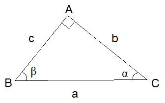
Pelo teorema de Pitágoras, temos que "o quadrado da hipotenusa é igual a soma dos quadrados dos catetos", ou seja, pela figura, a2=b2+c2
Observamos ainda que os ângulos agudos do triângolo retângulo são complementares na figura α + β = 90º
Exercícios:
1) Usando o teorema de Pitágoras, calcule o valor de x:
| a) 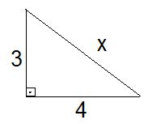 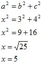 |
b) 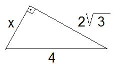 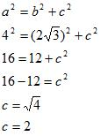 |
c) 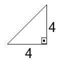 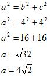 |
2) Determine o valor de α ou β nas figuras seguintes:
| a) 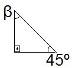 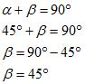 |
b) 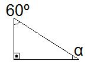 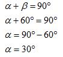 |
Razões trigonométricas
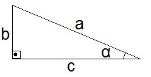
α = ângulo
a = Hipotenusa
b = Cateto oposto
c = Cateto adjacente
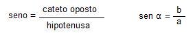
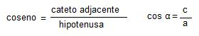
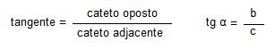
Observação:
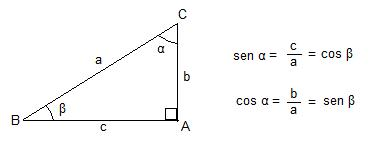
Exercícios
1) Em cada caso, determinar o sen α, cos α e tg α:
| a) 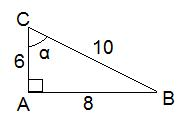 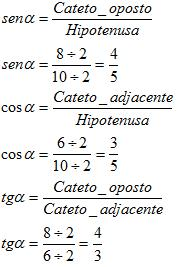 |
b) 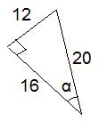 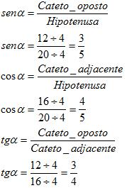 |
c) 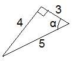 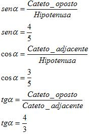 |
| d) 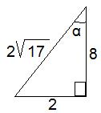 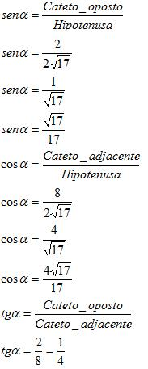 |
e) 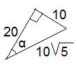 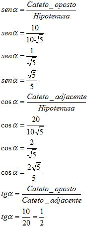 |
Tabela dos ângulos mais usados do triângulo retângulo
| Grau | sen | cos | tg | em radianos |
| 30º | 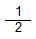 |
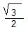 |
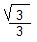 |
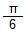 |
| 45º | 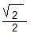 |
1 | 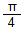 |
|
| 60º | 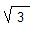 |
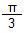 |
Exercícios:
1) Encontre x:
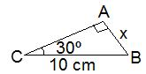 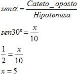 |
2) Encontre y:
| a) 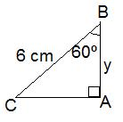 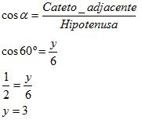 |
b) 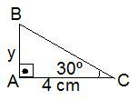 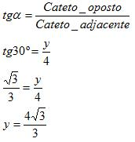 |
3) Encontre x e y:
| a) 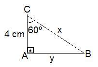 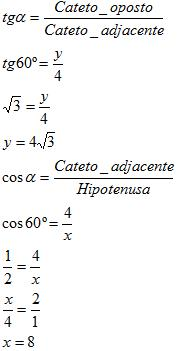 |
b) 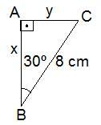 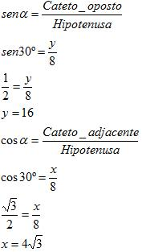 |
c) 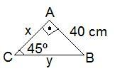 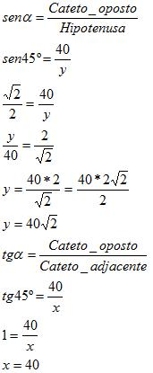 |
Unidades de medida
| Ângulo | em |
em radianos |
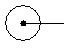 |
360º | 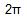 |
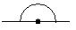 |
180º | 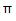 |
| 90º | ||
| 60º | ||
| 45º | ||
| 30º |
A unidade de medida usada pelos brasileiros é o grau, porém a unidade de medida usada pela maioria das linguagens de programação é o radiano, então acostume-se a transformar graus em radianos.
Calculando o seno, cosseno e tangente pelo computador
Se o argumento estiver em graus, multiplique-o por PI()/180 ou use a função radianos() para convertê-lo em radianos.
Exemplo:
| Arquivo ExemploJava.java |
public class ExemploJava { |
| Resultado: |
C:\ExemploJava>javac ExemploJava.java C:\ExemploJava>java ExemploJava 1.2246467991473532E-16 C:\ExemploJava> |
Calculando o arco seno, arco cosseno e arco tangente pelo computador
Retorna o arco seno ou o seno inverso de um número. O arco seno é o ângulo cujo seno é núm. O ângulo retornado é fornecido em radianos; o mesmo para arco cosseno e arco tangente.
Para expressar o arco seno em graus, multiplique o resultado por 180/PI( ) ou use a função graus().
| Arquivo ExemploJava.java |
public class ExemploJava { |
| Resultado: |
C:\ExemploJava>javac ExemploJava.java C:\ExemploJava>java ExemploJava 30 C:\ExemploJava> |
| Math.PI |
| public class ExemploPi { public static void main(String[] args) { // Acesso à constante Math.PI double pi = Math.PI; // Exibindo o valor de pi System.out.println("O valor de pi é: " + pi); // Exemplo de cálculo usando pi double raio = 5.0; double area = pi * raio * raio; System.out.println("A área de um círculo com raio " + raio + " é: " + area); } } |
| function radianos(){ return Math.PI/180 } |
| public class ConversorGrausRadianos { public static void main(String[] args) { double graus = 45.0; double radianos = converterParaRadianos(graus); System.out.println(graus + " graus é equivalente a " + radianos + " radianos."); } // Função para converter graus para radianos public static double converterParaRadianos(double graus) { return graus * (Math.PI / 180.0); } } |
| Math.sin |
| public class ExemploSeno { public static void main(String[] args) { // Ângulo em radianos double anguloEmRadianos = Math.PI / 4.0; // Calculando o seno do ângulo double senoDoAngulo = Math.sin(anguloEmRadianos); // Exibindo o resultado System.out.println("O seno de " + anguloEmRadianos + " radianos é: " + senoDoAngulo); } } |
| Math.cos |
| public class ExemploCosseno { public static void main(String[] args) { // Ângulo em radianos double anguloEmRadianos = Math.PI / 3.0; // Calculando o cosseno do ângulo double cossenoDoAngulo = Math.cos(anguloEmRadianos); // Exibindo o resultado System.out.println("O cosseno de " + anguloEmRadianos + " radianos é: " + cossenoDoAngulo); } } |
| Math.tan |
| public class ExemploTangente { public static void main(String[] args) { // Ângulo em radianos double anguloEmRadianos = Math.PI / 6.0; // Calculando a tangente do ângulo double tangenteDoAngulo = Math.tan(anguloEmRadianos); // Exibindo o resultado System.out.println("A tangente de " + anguloEmRadianos + " radianos é: " + tangenteDoAngulo); } } |
| Math.asin |
| public class ExemploArcoSeno { public static void main(String[] args) { // Valor para o qual queremos calcular o arco seno double valor = 0.5; // Calculando o arco seno do valor double arcoSeno = Math.asin(valor); // Exibindo o resultado em radianos System.out.println("O arco seno de " + valor + " é: " + arcoSeno + " radianos."); } } |
| Math.acos |
| public class ExemploArcoCosseno { public static void main(String[] args) { // Valor para o qual queremos calcular o arco cosseno double valor = 0.5; // Calculando o arco cosseno do valor double arcoCosseno = Math.acos(valor); // Exibindo o resultado em radianos System.out.println("O arco cosseno de " + valor + " é: " + arcoCosseno + " radianos."); } } |
| Math.atan |
| public class ExemploArcoTangente { public static void main(String[] args) { // Valor para o qual queremos calcular o arco tangente double valor = 0.5; // Calculando o arco tangente do valor double arcoTangente = Math.atan(valor); // Exibindo o resultado em radianos System.out.println("O arco tangente de " + valor + " é: " + arcoTangente + " radianos."); } } |
| Math.sinh |
| public class ExemploSenoHiperbolico { public static void main(String[] args) { // Valor para o qual queremos calcular o seno hiperbólico double valor = 2.0; // Calculando o seno hiperbólico do valor double senoHiperbolico = Math.sinh(valor); // Exibindo o resultado System.out.println("O seno hiperbólico de " + valor + " é: " + senoHiperbolico); } } |
| Math.cosh |
| public class ExemploCossenoHiperbolico { public static void main(String[] args) { // Valor para o qual queremos calcular o cosseno hiperbólico double valor = 2.0; // Calculando o cosseno hiperbólico do valor double cossenoHiperbolico = Math.cosh(valor); // Exibindo o resultado System.out.println("O cosseno hiperbólico de " + valor + " é: " + cossenoHiperbolico); } } |
| Math.tanh |
| public class ExemploTangenteHiperbolica { public static void main(String[] args) { // Valor para o qual queremos calcular a tangente hiperbólica double valor = 2.0; // Calculando a tangente hiperbólica do valor double tangenteHiperbolica = Math.tanh(valor); // Exibindo o resultado System.out.println("A tangente hiperbólica de " + valor + " é: " + tangenteHiperbolica); } } |
| Math.asinh |
| public class ExemploArcoSenoHiperbolico { public static void main(String[] args) { // Valor para o qual queremos calcular o arco seno hiperbólico double valor = 2.0; // Calculando o arco seno hiperbólico do valor double arcoSenoHiperbolico = asinh(valor); // Exibindo o resultado System.out.println("O arco seno hiperbólico de " + valor + " é: " + arcoSenoHiperbolico); } // Função para calcular o arco seno hiperbólico public static double asinh(double x) { return Math.log(x + Math.sqrt(x*x + 1)); } } |
| asinh(x) = ln(x + sqrt(x^2 + 1)) |
| Math.acosh |
| public class ExemploArcoCossenoHiperbolico { public static void main(String[] args) { // Valor para o qual queremos calcular o arco cosseno hiperbólico double valor = 2.0; // Calculando o arco cosseno hiperbólico do valor double arcoCossenoHiperbolico = acosh(valor); // Exibindo o resultado System.out.println("O arco cosseno hiperbólico de " + valor + " é: " + arcoCossenoHiperbolico); } // Função para calcular o arco cosseno hiperbólico public static double acosh(double x) { return Math.log(x + Math.sqrt(x*x - 1)); } } |
| acosh(x) = ln(x + sqrt(x^2 - 1)) |
| Math.atanh |
| public class ExemploArcoTangenteHiperbolico { public static void main(String[] args) { // Valor para o qual queremos calcular o arco tangente hiperbólico double valor = 0.5; // Calculando o arco tangente hiperbólico do valor double arcoTangenteHiperbolico = atanh(valor); // Exibindo o resultado System.out.println("O arco tangente hiperbólico de " + valor + " é: " + arcoTangenteHiperbolico); } // Função para calcular o arco tangente hiperbólico public static double atanh(double x) { return 0.5 * Math.log((1 + x) / (1 - x)); } } |
| atanh(x) = 0.5 * ln((1 + x) / (1 - x)) |
Manipulando Strings
O Javascript é bastante poderoso no manuseio de Strings, fornecendo ao programador uma total flexibilidade em seu manuseio.
Abaixo apresentamos os métodos disponíveis para manuseio de strings.
public class ExemploJava { |
|
| length() | Retorna o comprimento de uma String. Exemplo: Resultado: |
| substring(indiceInicial, indiceFinal) | O método substring (subcadeia) retorna a cadeia que se estende do indice Inicial até o caractere logo antes de indice final. Se indice Inicial for maior que indice final, o método funciona como se ambos estivessem com as posições trocadas. Se os dois índices forem iguais, retorna uma cadeia vasia. Exemplo: Resultado: |
| charAt(posição) | Funciona da mesma forma que o substring, só que, retorna o caractere simples em uma posição específica na String. Exemplo: Resultado: "e" |
| indexOf(caractere, [inicIndex]) | O método indexOf faz a busca no objeto string pela primeira ocorrência do caractere e retorna o índice correspondente. o argumento inicIndex é opcional e indica a partir de onde inicia a busca. Podemos localizar os valores dos índices para todos os caracteres do mesmo tipo iniciando após o índice anterior. Exemplo: Resultado:" 2 3 10" |
| lastIndexOf(caractere, [inicIndex]) | O método lasIndexOf é idêntico ao método index of exceto que faz a busca do caractere na cadeia do fim para o começo iniciando em inicIndex. Veja o exemplo anterior |
| replace(palavra, substituto) | O método replace você insere uma palavra ou uma letra em que você deseja substituir por outra. Exemplo: Resultado: |
| toLowerCase() | O método toLowerCase (para minúsculo) retorna a cadeia com todos os caracteres alterados para minúsculo. Exemplo: Resultado: |
| toUpperCase() | O método toUpperCase (para maiúsculo) retorna a cadeia com todos os caracteres alterados para maiúsculo. Exemplo: Resultado: |
"Hello".charAt(4) => o
"Hello".concat(" ", "world") => Hello world
"Hello".startsWith("H") => true
"Hello".endsWith("o") => true
"Hello".includes("x") => false
"Hello".indexOf("l") => 2
"Hello".lastIndexOf("l") => 3
"Hello".match(/[A-Z]/g) => ['H']
"Hello".padStart(6, "?") => ?Hello
"Hello".padEnd(6, "?") => Hello?
"Hello".repeat(3) => HelloHelloHello
"Hello".replace("llo", "y") => Hey
"Hello".search("e") => 1
"Hello".slice(1, 3) => el
"Hello".split("") => ['H','e','l','l','o']
"Hello".substring(2, 4) => ll
"Hello".toLowerCase() => hello
"Hello".toUpperCase() => HELLO
" Hello".trim() => Hello
" Hello ".trimStart() => "Hello "
" Hello ".trimEnd() => " Hello"
|
| Arquivo: ExemploJava.java |
| import java.util.ArrayList; public class ExemploJava { public static ArrayList Texto; public static void main(String[] args) { Texto = new ArrayList(); Texto.add("Tiago"); Texto.add("Maria"); Texto.add("Pedro"); Texto.add("Carlos"); Texto.add("Fabio"); Texto.add("Ana"); Texto.add("Francisco"); Texto.add("Bianca"); String memo = ""; int total = Texto.size(); if (total > 1) { for (int x = 0; x < total - 1; x++) { for (int y = x + 1; y < total; y++) { if (Texto.get(x).toString().compareTo(Texto.get(y).toString()) > 0) { memo = Texto.get(x).toString(); Texto.set(x, Texto.get(y)); Texto.set(y, memo); } } } } for (int z = 0; z < total; z++) { System.out.println(Texto.get(z)); } } } |
| Resultado: |
C:\ExemploJava>javac ExemploJava.java C:\ExemploJava>java ExemploJava C:\ExemploJava> |
| Operação | Resultado |
| "FRED".equals("FRED") | true (verdadeiro) |
| ! "SAM".equals("FRED") | true (verdadeiro) |
| "TWO".equals("ONE") | false (falso) |
| ! "TRHEE".equals("TRHEE") | false (falso) |
| Comparações de strings não são feitas com o operador == e sim com o método equals ou com equalsIgnoreCase (que ignora maiúsculas e minúsculas). | |
Existe apenas uma função para que se possa obter a data e a hora. É a função Calendar.getInstance(). Esta funão devolve data e hora no formanto: Dia da semana, Nome do mês, Dia do mês, Hora:Minuto:Segundo e Ano
Ex:
Fri May 24 16:58:02 1996
Para se obter os dados separadamente, existem os seguintes métodos:
No exemplo 1 abaixo obteremos o dia da semana e as horas. Para tal, utilizaremos a variável DataToda para armazenar data e hora.
| Arquivo ExemploJava.java |
/* b) Você não leu a documentação direito. getYear lhe volta o ano menos 1900, ou seja, para 2006 ele lhe retorna 2006 - 1900 = 106. getDay volta o dia da semana, sendo 0 = Domingo. E getMonth lhe retorna 0 para janeiro, 1 para fevereiro, e assim por diante. c) Quando a linguagem Java foi definida, só existia o java.util.Date, e ela era bem boboca (o próprio James Gosling que a escreveu, e ele não quis pôr um monte de frescuras nela) import java.util.Calendar; |
| Resultado: |
C:\ExemploJava>javac ExemploJava.java C:\ExemploJava>java ExemploJava C:\ExemploJava> |
exemplo 4: alterando a data
Para criar uma variável tipo Date com o conteúdo informado pela aplicação, existe o método set. Os mas importantes são:
Você pode simplificar as datas veja:
Tanto pode usar esta forma quanto da outra.
| Arquivo ExemploJava.java |
/* b) Você não leu a documentação direito. getYear lhe volta o ano menos 1900, ou seja, para 2006 ele lhe retorna 2006 - 1900 = 106. getDay volta o dia da semana, sendo 0 = Domingo. E getMonth lhe retorna 0 para janeiro, 1 para fevereiro, e assim por diante. c) Quando a linguagem Java foi definida, só existia o java.util.Date, e ela era bem boboca (o próprio James Gosling que a escreveu, e ele não quis pôr um monte de frescuras nela) import java.util.Calendar; |
| Resultado: |
C:\ExemploJava>javac ExemploJava.java C:\ExemploJava>java ExemploJava C:\ExemploJava> |
exmeplo 3: vendo as horas
| Arquivo ExemploJava.java |
import java.util.Calendar; |
| Resultado: |
C:\ExemploJava>javac ExemploJava.java C:\ExemploJava>java ExemploJava C:\ExemploJava> |
| Arquivo: ExemploJava.java |
import java.util.Calendar; |
| No Prompt |
C:\ExemploJava>javac ExemploJava.java C:\ExemploJava>java ExemploJava C:\ExemploJava> |
| add(Object o): adiciona à coleção o objeto passado como argumento. |
| size(): retorna o tamanho da coleção |
| get(int index): retorna um objeto dada uma posição. |
import java.util.ArrayList; public class JavaTeste { } |
Resultado: Banana |
| add(int index, Object element): adiciona um objeto dada uma posição. |
import java.util.ArrayList; public class JavaTeste { } |
Resultado: Banana |
| set(int index, Object element): edita um objeto dada uma posição. |
import java.util.ArrayList; public class JavaTeste { } |
Resultado: Banana |
| remove(int index): remove um objeto dada sua posição. |
import java.util.ArrayList; public class JavaTeste { } |
Resultado: Banana |
| clear(): apaga todo o conteúdo da coleção. |
import java.util.ArrayList; public class JavaTeste { } |
Resultado
|
| boolean contains(Object o): verifica se o objeto passado como argumento existe na coleção. |
| ArrayList lista = new ArrayList(); lista.add(“Jose”); lista.add(“Maria”); System.out.println(lista.contains(“Jose”)); // True |
| Object[ ] toArray(): converte os elementos da coleção em um array (rápidos acesso aos elementos). |
| ArrayList lista = new ArrayList(); lista.add(“Jose”); lista.add(“Maria”); lista.add(“Joao”); Object[] elementos = lista.toArray(); for(int i=0; i<elementos.length;i++) { System.out.println(elementos[i]); } |
| int indexOf (Object o): retorna a posição de um objeto. |
| ArrayList lista = new ArrayList(); lista.add(“Jose”); lista.add(“Maria”); lista.add(“João”); lista.indexOf(“Maria”); //1 |
| int lastIndexOf (Object o): retorna o último índice de um objeto. |
| ArrayList lista = new ArrayList(); lista.add(“Maria”); lista.add(“Maria”); lista.lastIndexOf(“Maria”); //1 |
Não utilize Matriz no ArraList, pode acontecer erros.
| Arquivo: JavaTeste.java |
import java.util.ArrayList; |
| Resultado: |
Linha 1 Coluna 1 |
| Criptografia | ||||||||||||||||||||||||||||||||
| Criptografar | ||||||||||||||||||||||||||||||||
| Descriptografar | ||||||||||||||||||||||||||||||||
| Criptografia de "Mão Única" | ||||||||||||||||||||||||||||||||
| Software que encripta o código-fonte | ||||||||||||||||||||||||||||||||
| Criptografar "Arquivos e Pastas" | ||||||||||||||||||||||||||||||||
| Funções | ||||||||||||||||||||||||||||||||
| Convertendo String para Numérica | ||||||||||||||||||||||||||||||||
| Convertendo Numérica para String | ||||||||||||||||||||||||||||||||
| Funções Matemáticas (O Básico) | ||||||||||||||||||||||||||||||||
| Funções Strings | ||||||||||||||||||||||||||||||||
| Manipulando Data e Hora | ||||||||||||||||||||||||||||||||
| Lista de Seleção => Idiomas | Países | Regiões | Fuso Horários | Mapas | ||||||||||||||||||||||||||||||||
| Array List | ||||||||||||||||||||||||||||||||
| Função String | ||||||||||||||||||||||||||||||||
|
||||||||||||||||||||||||||||||||
| Outras Funções Matemáticas | ||||||||||||||||||||||||||||||||
|
||||||||||||||||||||||||||||||||
| Funções de Base | ||||||||||||||||||||||||||||||||
|
||||||||||||||||||||||||||||||||
| Dados do Usuário I (Servidor) | ||||||||||||||||||||||||||||||||
|
||||||||||||||||||||||||||||||||
| Dados do Usuário II (Servidor) | ||||||||||||||||||||||||||||||||
|
||||||||||||||||||||||||||||||||
| Url e Diretório | ||||||||||||||||||||||||||||||||
| Url 1 | ||||||||||||||||||||||||||||||||
|
||||||||||||||||||||||||||||||||
| Protocolos | ||||||||||||||||||||||||||||||||
| http:// | ||||||||||||||||||||||||||||||||
| https:// | ||||||||||||||||||||||||||||||||
| ftp:// | ||||||||||||||||||||||||||||||||
| file:// | ||||||||||||||||||||||||||||||||
| Url 2 | ||||||||||||||||||||||||||||||||
| _top | ||||||||||||||||||||||||||||||||
| _blank | ||||||||||||||||||||||||||||||||
| Form | ||||||||||||||||||||||||||||||||
| Frameset | ||||||||||||||||||||||||||||||||
| iFrame | ||||||||||||||||||||||||||||||||
| Url 3 | ||||||||||||||||||||||||||||||||
| Enviando Variáveis através de um link | ||||||||||||||||||||||||||||||||
| Enviando Variáveis através de um campo de texto | ||||||||||||||||||||||||||||||||
| (Largura / Altura) de um Objeto (Imagem, flash, java, etc) | ||||||||||||||||||||||||||||||||
| (Tamanho em Bytes) de um Objeto (Imagem, flash, java, etc) | ||||||||||||||||||||||||||||||||
| Url Amigável | ||||||||||||||||||||||||||||||||
| Mini Url (Url Amigável) | ||||||||||||||||||||||||||||||||
| Subdomínio | ||||||||||||||||||||||||||||||||
| Coockies | ||||||||||||||||||||||||||||||||
| Redirecionamento | ||||||||||||||||||||||||||||||||
|
||||||||||||||||||||||||||||||||
|
||||||||||||||||||||||||||||||||
| Url Open Connection | ||||||||||||||||||||||||||||||||
| Url Checked Connection | ||||||||||||||||||||||||||||||||
| Url Checked Error | ||||||||||||||||||||||||||||||||
| Enviando E-Mail | ||||||||||||||||||||||||||||||||
| Caminho do Diretório | ||||||||||||||||||||||||||||||||
| Nome do Sistema Operacional | ||||||||||||||||||||||||||||||||
| Diretório Atual => do Computador | ||||||||||||||||||||||||||||||||
| Url Atual => de uma página da Web | ||||||||||||||||||||||||||||||||
| Diretório Atual => de uma Classe Interna do Arquivo Compactado Jar do Java | ||||||||||||||||||||||||||||||||
| Applet's Java | ||||||||||||||||||||||||||||||||
| (Lagura / Altura) do Applet | ||||||||||||||||||||||||||||||||
| Parametros | ||||||||||||||||||||||||||||||||
| Url | ||||||||||||||||||||||||||||||||
| De Javascript para Java | ||||||||||||||||||||||||||||||||
| De Java para Javascript | ||||||||||||||||||||||||||||||||
| Flash | ||||||||||||||||||||||||||||||||
| (Lagura / Altura) do Flash | ||||||||||||||||||||||||||||||||
| Parametros | ||||||||||||||||||||||||||||||||
| Url | ||||||||||||||||||||||||||||||||
| De Javascript para Flash | ||||||||||||||||||||||||||||||||
| De Flash para Javascript | ||||||||||||||||||||||||||||||||
| Upload | ||||||||||||||||||||||||||||||||